This chapter of my diary has just started, and my main objective is to make progress.
Math: I gotta do math again, yipeeeeee, so that I can get to Groningen, the OMPT-D exam is impending
French:A very hated language, but it's my heritage so I must respect it, time to graduate from A leve to whatever the next level is
Getting a job: :(
Building my PC: I gotta finally make an upgrade so I can stop gaming on my dumbass laptop
Volleyball: I just gotta find a place to play volleyball
Music??: Gotta find a way to get back into it, probably improving my guitar skills or succesfully installing ableton in my new laptop
And that's about it, it technically isn't new years yet, but this are my end of chapter resolutions. Last Chapter I didn't really have a clue where I wanted to go, so this chapter I want to have really clear what I want to do.
Date:18/12/2025
Climate:clear
Initial Spacetime:19:00 at Montevideo
Title:The Comeback
So, picking up from where we left off. I arrive to Uruguay, but the boat that took me here was retarded, meaning that it was delayed, or tardy as some people may say. My mom was also delayed, which wasn't helping. She eventually arrived and picked me up. Then we went directly to the Uruguayan American School's anual alumni reunion to reunite with my old friends. Bruno called me and I confirmed to him that I was coming, I told him to blame fabrizzio for my lateness since his family owns the buquebus boat buisness.
Once I arrive, I saw Fede who was on his way out. He had a birthday, but we agreed to meet up someday, he is leaving this country once again on the 29nth. Upon entering the UAS confines and heading to the reunion area, I meet Lupi, Fabri, Luca Cassoni, Lucas, Bruno, Chiara, and last but certaintly not least, some people would actually say most, Daniiiiiiii. I however, DO NOT, meet Raz who had previously promised me that he was going to be here. This tells me that his promises are subject to changes which is not a good quality for promises to have.
We catch up and everything is super cool and really great. Bruno has an entire new look with a beard and a mustache he actually looks so epic. I also talked to Bruno about some really interesting developments in the recent war in the middle east. We are both on the same page regarding our opinions about it, we both think Hamas is a terrible terrorist organisation and the Israeli government is an equally terrible organisation full of war criminals, and both sides harbor so much hatred and animosity towards each other that it's borderline immpossible for any of them to reach any peacefull resolution. It's specially funny how both sides think that the opposite side has a very big grasp on social media and "rules the world", I knew about the classic "Jews run the world" type shi, but apparently the opposite also exists, like Hamas runs the world or the media or whatever.
We also talk about the new Chilean president, many of my chilean aquaintances on instagram are really not happy about the new president because he doesn't like gay people. It's just really sad that people in the right always harbor so much hatred for minorities because their policies aren't even that bad. but yeah he wants to end gay marriage and abortions.
Bruno also informs me that Sofe the future Film-maker was actually planning to go to this Alumni reunion, something that absolutely baffled me since she was living in France. Why would you want to leave, but apparently she appreciates her country of origin a lot, which is really respectable. Unfortunately she wasn't able to make a comeback because her flight got delayed in madrid. Federico Berman's flight also got delayed in madrid, so there is something going on in there.
Then I went to try to get a volleyball, on the way there crossing paths with Martina who didn't seem very happy to see me for some reason. I Mariela, mother of Luca taccone for a volleyball, and they gave us one, and we tried playing volleyball but failing miserable because Bruno couldn't really pass it that well.
After that we all decided to go eat something at Obra, we met up with Chiara and two of her friends, Belu and Nico, on the way there we also went to pick up Martina who had to shower and stuff because volley. We ate pizza and talked about a bunch of stuff. Chiara mentioned something about Martina doing something 16 times, and she also said they no longer hate each other, which is good. Nico explained how he met Chiara like 3 times because fabrizzio failed to understand it or something. Basically they met at a birthday party because they were friends with Santino, they both speak english too so thats cool.
Mono and me
Lupi is also here, and he is really cool I like that he is here and I hope to see him more often. Chiara remarks how Lupi still has his chisled musculature, and she asks if Lupi still goes to the gym, he does indeed still go to the gym, he actually establishes he went today to the gym with Dani and probably someone else. I would like to join them but i'd be a little embarassed, i'll train by myself until I get strong enouph to not be embarassed.
Chiara and I eat a margarita pizza with spicy honey, everyone also eats some pizza. Chiara and Martina still enjoy of the pleasures of Nicotine, a habit that I was hoping was left in the past. But there is more to Lupi than what I previously mentioned, he also has a Cassino check that is apparently about to expire, so he has to go to redeem it. We all go to the gas station where Nico and I both get chocky milk, and then we head to the cassino. We all go to the bathroom, and we also meet jeff who was gambling in a suit. Jeff is our previous gym teacher back in UAS. He always made this very off-putting comments about girls... that were underaged. I never really liked him because of this and I am very surprised he still has a job.
We then proceed to go to a bar because Mati and his roomate are there. Chiara, Martina, Nico, and Belu go with Chiara, while the rest go with fabri. Fabri's phone is out of battery, so I get on the aux, and I expose my friends to some of Bruno's epic beats. In the middle of this experience, Chiara sends me a message about how there is a wedding at the bar that they were planning to go to, thus we will meet at MBC. We go there, but before getting out of the car they ask me to put Freestyle by lil baby.
Then Mati shows up, with his roommate Alex, not Alex the one in Canada, I'm going to call this Alex Alex2. So we all go to the bar, nothing very interesting happens at the bar. The most interesting thing I remember is that I played chess against Nico, but then Lucas took my phone and he beat Nico. All the while Nico told me about his backstory, where he had a startup company that went down because of his partner's greed, and how he wishes he had finished his engineering carrier.
Also I asked Martina what she was studying, it's international relations, or buisness. Something like that, I don't know who half of everyone in Uruguay is studying so its good that I got this written down here. Mono, Lupi, and I are all studying Biochem which is really cool. We are like the biochem squad.
Anyways, after a while of nothing happening, we decide to leave. Martina is eager to continue the night, she wants to go to Obra. Me on the other hand, im not eager to continue the night. Fabri takes Dani, Me, and Lucas back home while the rest go to Chiara's house, kind of against her will. I don't know what Fabri did, but if I had to guess... then I would guess but I wouldn't tell you what my guess was.
Rating4
It was nice to see so many familiar faces.
Date:19/12/2025
Climate:Sunny and Windy
Initial Spacetime:16:10 at Club lon tennis
Title:Tennis and the Pool
So i've been wanting to play tennis against Lucas for a while now, he is really good at tennis. And I am mediocre. Therefore I only managed to win one game, which is better than no games.
Then we went to pick up Fede, and that we did, he was very excited about being there. We talked about stuff that I don't remember about. I did mention that Sofe and Federico Berman where stuck in Madrid, and Fede looked it up and apparently there is a huelga that might or might no give him some problems in the future. But we did eventually arrive to my home. We looked at the pool, but today it was unusually windy meaningn that getting in the pool was a little scary. We all got to the pool and immediately left.
Then we played exploding kittens, it was really fun. We also played this new game called "Impostor" where we all have one word, except the impostor, and if the impostor figures out the word, the others lose. But if the others figure out who the impostor is without the impostor figuring out the word, the others win. I was really bad at this game but it was still very fun.
Rating2
It was nice, but not expertly nice because I was tired
Date:20/12/2025
Climate:Sunny and Hot
Initial Spacetime:19:56 The car of Lucas
Title:Mario kart adventures
So today I woke up and then I decided to go to sleep again. Waking up at like 18, which is bad but whatever. I texted Sofe today, and it turns out that she has made it to Uruguay which is nice. Also, while I was awake, Lucas and Raz planned to go to a pool table place, but it became to late so we instead went to eat something. Lucas picked me up and off we went to Raz's house.
On the way there, I asked Lucas if there was anyone he didn't like in the class, he responded that not really, but then he gave a little bit of a hot take. He asked "Sabes quien es alguien que me cae bien, pero a veces lo queres matar?" the answer was Raz. I do understand this sentiment to an extent, a very big one actually. I just can not understand how he didn't show up to the Alumni reunion despite having more than a month of anticipation, it's just crazy, like the one early event that I ever convince him to go to and he doesn't show up even though he said he would. Lucas and I don't really like how often he fails to show up at things, and even worse he later complains about not being invited, like... duh, if you fail to show up 3 times in a row people are going to start assuming you just don't want to be there. We still both agree that he is cool and good, we just don't really understand his lack of participation in social gatherings.
We also talk about how Fede and Raz hate each other merely for political reasons, which we both agree is dumb. I think I care about things deeply, and I have beliefs, but I don't let them interfere with my friendships. I also don't like how often Raz talks bad about Fede with no hesitation any time I accidentally bring him up.
Eventually we arrive to the house of Raz, and then we go to the diner to eat. We play a few games of impostor, and I even won one of the games, the word was blanket and it was all very epic. I ate vegetable soup. Also Raz has been recommending me this lemon pie for a long time, so I ordered one to go.
Then we went back to the house of Raz and we played mariokart. I had a cool setting which allowed me to use the controller as a steering wheel, it was way harderd for me but I thought it was more fun, Raz and Lucas eventually tried it out and that was the only time I won. Then I spilled a glass of water, and then we watched doctor house as Lucas fell asleep. He took me home after waking up.
Rating2
Thoughts
You might be thinking this entry is more about my thoughts on Raz than it was about what actually happened today, and you are right, because today I spent most of my day thinking about Raz. While playing impostor he said the word illegal and was somehow expecting me to connect it with mexicans, which just struck me as a little racist, and he also said fat people don't run. This attitude just strikes me as a little too judging-by-the-books-cover'y if you catch my drift.
I also think back to yesterday where I was talking to Fede about Raz and how he is going on a trip to Israel and thus he has meetings and stuff and that is probably the reason he couldn't get to the Alumni reunion, and I felt like I slipped up, because every time that I accidentally mention Fede or Sofe to Raz he kinda insults them, but when I mentioned Raz to Fede, Fede didn't insult him or anything, he was actually just kinda curious. And I liked this a lot because it means I don't have to censor myself in order to avoid hearing my friends being insulted, like the time Raz called Fede retarded in what sounded like an un-ironic way.
Date:21/12/2025
Climate:Sunny
Initial Spacetime:Unknown
Title:Sofe's comeback
Today we are meeting sofe for the first time in a long time. Upon waking up I created this little Document stored in a Portable Format that contains just about all of my thoughts about Raz, Sofe, and Fede and how they all hate each other and why. I love writing down my thoughs and analysing everything. And I feel like I have most definately reached a conclusion about the current war in the middle east. They all deserve to die, well actually no, if it were up to me no one would die. But if anyone dies it should be the people that are okay with killing others. The bad thing is the fact that it's not only the Hamas members and the Israeli goverment members that will suffer, all the innocent lives in-between. They are the real victims of the nonsensical war wagered by the evil forces of the Isaeli government and Hamas, and since they hate each other so much, there is no hope of this ending in any other way than one group, or the other, or perhaps both, disapearing, until only reasonable people exist. I guess it's the world's way of purging this nonsense, sacrificing thousands of innocent lives to get rid of the not-so-innocent lives. Well boy am I glad I have absolutely nothing to see, do, or care about in the middle of the east.
Anyways, after creating that awesome Document I asked Sofe where we were meeting up, the answer is in Punta gorda, immediately making me think of Fede and how much of a terrible idea it would be to invite him into this.
Lucas wants to go to the gym, but it's already 16:15 21/12/2025, So I don't know how he is planning to get to Punta Gorda at 18:00 21/12/2025, but I believe in him.
Before the main event of the day happened, I got in a call with Raz. This proved to be quite interesting. At first it was nothing out of the ordinary, he was just playing silksong after beating it for the first time. However then he said "You want to watch a lore video about why Islam's hate dogs". It was so random I failed to register it correctly three times in a row, also the mic cut a lot. I then confront Raz about his beliefs on the Islam population for the first time, by saying "I feel like you have some animosity towards this religion" he responded saying something along the lines of "Look, im just saying I don't like pedophiles and [something else that was bad but I don't remember]"
Then we proceeded to watch the video. The video doesn't actually attempt to give any explanation as to why Islams hate dogs, instead it's basically a huge compilation of quotes from the Qu'ran(Islam bible) aswell as some Hadiths(Muhammed quotes) that talk bad about dogs. Now to trust some random youtuber to succesfully interpret a religious text by just grabbing random quotes from such religious text and pointing out bad things... I know how it feels to be a victim of that because everyone does it with the religious text of my religion, AKA The Bible. And myriads of others also do it with The Torah and The Qu'ran. If we are going to just start picking bad verses we can mention how the Torah establishes you can rape women to force them to marry them or how the bible is A-Okay with slave trade. But if we want to get to some actual truth, then we might have to look at the context behind all of these quotes, and analyse the authors intent through the use of several lenses, most importantly the historical lense, seeing what were the values and beliefs of everyone at the time and stuff like that. Many people would say that is some very "woke" vocabulary I just used there, but I'd rather be woke than sleeping while analysing a text.
This video seemed to have one purpose only, to fuel a pre-existing hatred for a group of people. And I just really didn't like that, however I was way too occupied with other things to properly confront Raz about this behaviour. It's not even that I think that Islams are perfect, I despise the way they treat women, and the few Islam extremists do use these quotes as justifications for doing horrible things to dogs without any attempt to understand or correctly interpret their religion.
I won't say that I am an expert in the Qu'ran or that literature and history are in any way shape or form my expertise. I'm just saying that I would definately not approach this subject throught the use of every-day media such as youtube, because that might lead me to create some biased conclusions about a substantially large group of individuals. There is nuance to this stuff... is what I'm trying to say, and is what I wish I would have told Raz. I can't say for sure if Raz believes that absolutely all Islamists have the same ideology and they are all bad, and I was kind of afraid to ask because if he does think that then that would make him 100% racist by definition. And at this point in life, the grand age of 19 to 20 years old, I don't know how much you can change your beliefs, I know Raz is smart so I have hope he can change his beliefs.
And then it happened, some hours later, my mother took Lucas and I to the plaza of Punta Gorda, isn't that wonderful. Sofe and Bruno were not there. we arrrived slightly late at 18:20, but Sofe and Bruno also arrived late so it's all good. I walked with Lucas and I tried discussing this subject with him, but he quickly deflected to saying that the frickin sky was blue or whatever, meaning he probably didn't want to talk about it which is understandable. We walked around until Sofe and Bruno appeared. It was really nice reuniting with some very missed friends.
We start walking through the ramble. I talk to Bruno about my conversation with Raz. Bruno isn't surprised, after all Raz supports the decisions of the current Israeli government, which includes bombs exploding and killing people. Bruno agrees that Muslims do have some bad things as a group, they don't treat women very nice. Many women often complain about how much they need to cover themselves, and women that convert to Islam traditions often regret doing so. Not to mention I read a whole book that extensively covered this global issue. Persepolis by Marijane Satrapi. Raz had mentioned that this religion is relatively new in regard to the others, so maybe they are a little behind in the evolution of women's rights since the other religions got born early and had a head start.
I do severely disagree with the treatment of women, not only in Islam but also in all the other main monotheistic religions. They always seem like accesories or like unimportant to an extent. I wonder when we will move past this, maybe the next pope. Still, I don't really believe that the entirety of the muslim population should be hated because of this, and Bruno agrees. It's dumb to hate any group of people just because of a "might". However in Raz's case, Raz is a jew, and Islam extremists hate jews. Therefore we have a russian roulette situation, where in Raz's case its safer to not trust any Islam at all and assume they are all bad just to be safe and to avoid meetin a potential Islam extremist. Therefore Raz's beliefs can be justified by his innate desire to not die, one desire that I, and hopefully you, also have
With this out of my brain, I can finally, have, some, fun.
Fun Begins
Epic picture taken by Sofia Castellano the future filmaker
Sofe asked about everyone's love life
The love life of the hyperbolic crew(I just made this name up)
Timothy: I told Sofe about the times where I unsuccesfull invited Mica to eat some ice-cream twice. I did not tell her though that I plan on trying to help her pass the Morphological Science exams throught the use of my expert-level Xournal pages, and that once I help her out she will immediately fall in love with me and we will live happily ever after. I can't think of any other possible route this plan could go on
Lucas:In his very own words "La verdad es que no se presentaron muchas opportunidades pero vamos a seguir jugando y haciendo lo que se puede en la cancha" or something cool as fuck like that
Sofe She said it was too complicated to be explained in a short manner, hints and pieces of Sofe's AMAZING love story will be scattered throughout this event, so you better read absolutely all of it because I know how interested you are in this
Bruno: Nothing too serious
So the first Key Hint we get about Sofe's love life is Arthur, a very attractive man that has broken up with her because he was having some individual troubles or something. Sofe didn't like this one bit, furthermore, this guy never apologised to Sofe, and now he wants to get back with her. But Sofe is doubting this. Not only because he hasn't apologised, but because apparently this guy has a criminal record and has stabbed someone... and now he is asking for Sofe's phone number.
So the answer to what Sofe should do is really clear, but let me narrow it down to a Multible Choice Question in order to make it easier for you, the reader.
What should Sofe do upon finding out the guy that stabbed someone wants his phone number
Try to help this individual work through his problems in hopes of eventually fixing them and living happily ever after
Ignore the problems and hope for the best
Never talk to this individual again
Tell your friends you know the right option but you still think he is too hot so you don't know what to do and just impulsively give this guy your phone number
The reasonable option would be option C, however Sofe opted for option D. Eventually we get to some random restaurant, we sit down in this random restaurant, and Lucas has an amazing idea. Playing Impostor. Now, I know we have played this a grand total of 2 times already, ones with Fede, another with Raz, and this third time with Sofe and Bruno. I have aquired some skills. So I am going to go into more detail here. The rules art simple
A word is chosen
An impostor is chosen
Everyone but the impostor knows the word
Everyone must say one word that relates to the original word, including the impostor
The impostor must figure out the word
The others must figure out who the impostor is
The impostor wins if he guesses the word after being caught
The impostor also wins if he doesn't get caught and someone else is wrongfully accused
The others will win if they succesfully vote out the impostor without him knowing the secret word
I will only cover the three most interesting games
The Hint Word problem
After a while of playing, we decided to activate hintwords. The word was KFC. Sofe said delicious, I said rabas (fried squid) Lucas said animal, and Bruno said Kentucky. This was a bad sign alreay, but I immediately noticed it was Bruno because he said the actualy word. The right play would have been to act as if that word was suspicious and vote him out then and there to lower his chances of saying KFC. However we played a second round aswell and it became clear that whoever the impostor was, he or she knew that the word was KFC, meaning we had already lost. Still, I think it was pretty smart how I managed to deduce it was Bruno despite him saying Kentucky. It turns out that Bruno got the word "Colonel" making it extremely obvious.
Proof Sofe smokes(She never denied it, but here is the proof)
Bruno's Betrayal
So the word was Switch, Lucas said "Change" Sofe said "Technology" Bruno said "Buttons" and I said "Change". It had seemed that the impostor had cooked in this one because all of the words were cohesive with one another. For the next round I don't remember what Lucas said, but Sofe said "Friends" and Bruno said "Wires" and finally I said "Control"
My main suspicion as of now was Sofe, friends just doesn't make sense, and I tried having her explain it, but it she didn't do so succsefully. Lucas was kind of unnecesairly suspicious of Bruno because Buttons and Wires is a little to vague. I can see the reasoning but at the same time. Sofe said friends... what does that have to do with Switch?? So I locked in Sofe. Lucas agreed with me and he locked in Sofe aswell, Sofe said it was suspicious how I was targetting her, so she voted for me, and Bruno, this mother fricker voted for me??? how??? why???? According to his logic... I have a Thymus... bitch, feckin everyone does
So we made up a rule that if two people get the same votes we Rock, Paper, Scissor our way to victory, and Sofe won. She was indeed the impostor and I wanted to kill Bruno for being so dumb how was I ever going to be the impostor my words were so good what the hell. I asked Bruno but as is tradition, Bruno failed to reply to my questions with any measurable amount of sense. Meaning that he was probably just trolling.
Timothy's Revenge
Safe to say I was proper pissed at Bruno because the guy is smart and there is no way he didn't know it was Sofe. He was just trolling me, so my primary directive was to troll him back. But I was the impostor. I decided that my troll back was to use the same words that miraculously got Sofe to win, those being "Technology" and "Friends". The other words that the rest said were "Airplane", "Car", "Lithium", and "Rabbit". We decided to go to a third round where I said "Electrons" since I had already figured out the word, I had already won. Despite this, everyone still voted me because I was clearly trolling with the first two words, but it was too late, the word was battery and I succesfully got my revenge by taking advantage of Bruno's word, lithium really gave it away.
Anyyyyhow. The food arrives and we devour it, the rabas are very good. I also remember that I asked sofe "In a matter of percentages, how much does hotness matter in a serious relationship" her response surprised me, "0%" - Sofe
It's not that I think it's wrong, I actually think it's 100% correct. It's just a little off because Sofe had previously stated that she cares a lot about sex in her love life. But perhaps I am entangling sex performance with hotness, which are two potentially seperate characteristics. But also Sofe's actions regarding Arthur seem to contradict her own response, since the only reason she is even considering being with him is because he is hot.
Anyways, we go pay for the bill, I ask to split the rabas in four. Then the guy if we aren't from here. And I say that Lucas, Bruno, me, and Sofe are all from here, but I say all the names seperately which was kind of funny. Turns out Bruno didn't eat a single Raba so Sofe payed his part and we made a deal to buy her a snack to compensate.
In our journey to a snack we get more Sofe romantic lore. There is this other guy called vince, and he is currently with Vince I think. Vince is not a stabbey like Arthur, so naturally Sofe should go with Vince, the only problem is that Arthur is too hot. And Sofe proceeds to show me some pictures of Arthur while eating hot bananna chips I bought her. I must admit, he does have muscles... although Lupi's muscles are bigger, so Lupi if you reading this, keep up the good work ma guy. Still this guy was definately more attractive that Vince in my opinion, and Sofe agreed. I would still not put his attractiveness on the "omg I would absolutely let him kill me" side but... there are no buts sofe should absolutely never speak to this guy again and if she still is, then she is either stupid or she is looking for a final one-night-stand, which is stupid regardless so yeah. I'm glad my life is not in her hands otherwise thigns might have gone sideways for me.
Then I get into a philosophical argument with Bruno, is it possible for everyone on earth to be okay with each other existing some day. The answe we came up with is... it's theoretically possible. But the only way for it to happen is that anyone that hates another group ends up getting killed because of that very same contempt. And only peaceful people remain. The only problem is that then the peace might once again get disturbed, and the cycle will happen all over again. There is no escape.
Then we get to the plaza where Sofe gets called by Ian, the third guy he is dating. Ian seems like by far the best pick, but at this point I have given up trying to convince Sofe, she knows what's best. It's just a matter of her overcoming the attractiveness of Arthur, which..... is apparently harder for her than it would be for me. I mean Mica is probably the prettiest girl I have ever met, but if I knew that she stabbed someone I wouldn't really stick around to find out if she might stab me. Specially if I don't know her that well.
But what can I say. Later Sofe and Bruno folded a cigarrette and filmed a tutorial about it. Also I asked Sofe if she plays chess and she indeed does because apparently its a form of rizz in France. I didn't know this, but I acted as if it was. Then Sofe and I practiced rizz(we played chess against each other) and Sofe's rizz is really bad. Unless the rizz part of chess comes from sucking at the game completely, then Sofe is really good at rizz. I recommended she learn the French defense for the next time we play the game, which might be never since I don't feel like she enjoyed playing me.
Shadows of the people
Then me and lucas left.
Rating3
It was really cool, I specially liked the part where we played impostor and I specially disliked when Bruno ruined my expert deduction by trolling.
Date:22/12/2025
Climate:Cloudy
Initial Spacetime:21:00 Mono
Title:Asade
Before the event
I woke up today thinking about Islams and how true was the dog-hating claims that Raz made yesterday, thus I spent most of the day investigating this. And I came up with a second Document stored in a Portable Format detailing all my research about why the Qu'ran says this. [[SPOILER ALER: It doesn't really]]
Then I get to a very big discussion with Raz about weather or not anyone who believes in Islam is bad and deserves the hate and condemnation of Raziel Meir, a wrath I wouldn't wish upon anyone. It took a while, a huge while. But I managed to get him to agree with something along these lines, "Given that the Muslim individual hasn't interpreted the religious texts in ways that disagree with my[Raz's] personal values, I don't hate him". So that sounds like a really dumb and obvious conclussion we could have gotten to in like 5 minutes.
But most of the 2 hour debate was spent with me trying to convince Raz that it's still possible to interpret the Qu'ran in non-evil ways. Raz believes that in it's core, it can't be, because the religion itself was corrupt, I believed that it wasn't the religion that is corrupt, but mostly the people that are in current control of the main narrative of the religion. He eventually admitted that it may be true that it's not the religion itself that is evil, but instead the most popular interpretation of such religion, aswell as the interpretation of Islam extremists. To disprove my claim, Raz would need to find a verse in the Qu'ran that is undeniably, indisputably, 100% bad, and no context can possibly save it from being bad. I think im in the clear because I don't think that is actually possible. The bible has slavery and buying women, yet the context still saves it from being racist and mysoginist. I very highly doubt that the Qu'ran differs from this in any way, but who am I to know, i'll let Raz look it up.
Anyways, after that, the event begun
I went to Lucas' house, he is doing an Asado tonight and he has invited Dani, Luca, Fabri, and me into his house. I cut the bread, Fabri critiqued our contributions, Luca cut the chorizo, Dani brought the chimichurri, and Lucas cooked the meat. It was wonderful. The meat was really good, Luca brought some cheddar-injected chorizo which was nice. We also played a few rounds of impostor that were really interesting. I won one where the movie was Matrix by guessing the word, which was epic. Luca won one that said "City Hall" because he just bounced off something I said about Pam Bondi.
Later we ate ice-cream and it was good. Then we went outside and talked about random stuff. I told Dani how Raz was a little racist towards muslims but I managed to convince him that not every devout muslim is bad. Dani said it's no surprise since Raz is a jew, I don't necesairly think that logic applies, i've met jews that don't hate every devout muslim ever but whatever. With Dani we also talk about how we used to play tag in this house and some cool memories.
Also, Luca is studying finance, with some coding stuff I think.
Later we all went home.
Rating1.5
Date:27/12/2025
Climate:Sunny
Initial Spacetime:Gym of Lon Tennis
Title:The Birthday of my Sister
So, a few days have passed, so I'll catch you up. My sister, Leo, and my parents have gone to Punta del Este. And I am staying in my house with Alberto Gonzales who is one of my dads oldest friends, he is a very smart and succesfull man/entrepeneur. My original plan was to leave with Albert to see my sister in Punta del este for her birthday.
So I woke up, and upon doing so I have a cool and nice interesting talk with Albert about politics, he has a lot of opinions, my favourite one being that Trump is the worst president the United States has ever had. He offered me a narrative that I have never heard about trump, and I have heard a shit ton of narratives about Trump.
Albert's new trump Narrative
Trump has inherited a bunch of money from his Father, a multimillionaire real estate agent or something. So according to Albert, Trump has never created a succesfull buisness in his life, no buisness that generates money. I asked "What about the Trump Towers" and Albert responded that someone else created the trump towers and he payed Trump to use his name. I don't know much about the buisnesses that Trump has created over the decades, so I didn't really know how to question this claim, but I chose to believe him.
I also chose to believe him when he said that Trump once had a reality show called "The Candidate" or "The Apprentice" I don't remember, but it was basically a show where Trump needed to make some decisions and according to Albert, every decision he ever made was terrible. Albert read that the producer was actually shocked at how horrible Trump's choices were.
The final piece to this puzzle is that once Trump's show was over and it was canceled, Trump was mad and he rallied up some people by giving them 50 dollars each, and he anounced he was going to be president. So he ran for president and he wasn't expecting to win, but somehow he did. However none of his crazy laws got approved because yeahh. But this second time he did actually get to pass some laws because he got some people into congress.
Also, the war of Russia vs Ukraine was apparently about to end, but when Trump won he started supportin Russia which extended the war until the present day. This is because according to this narrative, Trump is a dumb, easiy manipulated, bad person. This leads to a little bit of my own theory, Trump was re-elected as president because other people in power were interested in having an easily manipulated person in power of the USA. Putin really likes the friendship he has with Trump because he gets to have Trump's pseudo-alliance in this whole mess. Some people may argue that Netanyahu is doing something similar. However that situation is a little bit more nuanced than Russia and Ukraine, therefore I won't go into it.
I personally think that this narrative is really interesting, coming from a person that not only lives in the US, but is also really smart and influential. Furthermore, Albert emphasises that the worst thing Trump has done is pass some sort of bill/law that said that presidents have immunity, which I don't know about you but that sounds an awefull lot like what Kishner did back in Argentina, and Kishner is probably the worst president of Argentina.
Anyways, I ended up not going with Albert to Punta del Este, opting to stay in my house to take care of my dog. Later this day I went to and Asado that Luca insisted Lucas to do. Dani and Fabri came to pick me up, and apparently Luca forgot to show up so. Anyways, not much to say about the Asado, I bought some pomelo fanta and everyone liked it more than what they expected. Also I got everyone to play speedchess against me and each other and it was really fun. I'm actually not that good at speedchess meaning that it's more fun. Dani actually beat me in an epic game.
After the Asado was done, I played spaceteam with Fabri and Mono. And after that, we all started listing the worst ways to prepare for a marathon.
Rating3
Date:28/12/2025
Climate:Sunny
Initial Spacetime:My house at like 17ish i don't remember
Title:Fede's last Sunset
So Fede has been in Uruguay for quite some time now, but he is leaving the 29nth of December, meaning that tomorrow he is gone. Therefore I wanted to spend some time with him before he's gone. So I arranged to meet at Punta Gorda right after Lucas and I finish our gym session, we can witness the sunset and then go eat crepes.
So we do that, Lucas comes pick me up at the and we go to the gym, I trained legs. And then we went to Punta Gorda where Fede resides. I tried to talk to Fede and Lucas about some recent shows I've been watching such as stranger things and Frieren, but I kept getting interrupted by Lucas calling out random things and Fede also calling out random things, so I stop talking about this stuff that they clearly don't find interesting. I ask Fede what he thinks about the recent Chilean elections, this is because sometime ago I saw some Chilean friends post about the Chilean elections and they were all pretty pissed, and now I want to seem like I am very socio-politically aware of the situations around the globe so I've been asking everyone about the Chilean elections to seem smart. So far everybody has said they didn't even know the Chilean elections happened, but Fede is the first out of many to break this trend. He says he hates this new president because he supports a previous Chilean dictator called Pinoccio or something like that.
This Pinoccio guy was apparently pretty bad and Kast openly supports him. Furthermore, I have read that Kast is openly against gay marriage. Being opposed to gay marriage is a massive red flag to me, because it just tells me that you are caring a little bit too much about what other people do with their life. And you also might be putting a little bit too much blame on something as inconsequential as a man marrying another man. Regardless, my opinions about Kast seem to align with Fede's, along with most of my Chilean friends. I will consider asking one of my Chilean friends her opinion about their current president so that I can get a more accurate narrative about his policies and what his presidency means for Chile.
Anyways, we see the sunset
The Sun Sets
Rating2.5
Date:31/12/2025 - 01/01/2026
Climate:Sunny and really hot
Initial Spacetime:The House of the Borit Family at like 17ish
Title:New Year Begins
So, a new year finally arrives. We were invited by the Borit family to spend the New year's iniciation at their home in a farm that they have far away. So we went there. This family is one whom my best friend belongs to, he is a really cool guy called Constan.
We arrived before constan, so I just waited for Constan a bit while walking Capu(my dog) whom I insisted in bringing here becasue I didn't want to leave him alone for new year. Eventually Constan arrives and we catched up, apparently he has gotten a lot into pokemon and raft.
Everyone starts preparing the food while Constan and me talk some more. Then we eventually al had the idea to play sardines, I personally don't really like the game but it was still fun. After that I played Chess with some people and it was fun, I also popped open my Guarana that I bought the other day. Apparently the borit family is quite fond of Guarana, so that was great.
It's also worth mentioning that Salvi and Constan are both kinda injured but not seriously. Salvi fell due to a 0.5 meter steep elevation change in the floor while avoiding a beetle and a rat on his way back from aquiring his nintendo switch. He fell sideways into the floor, forefending any head-injuries but intaking some arm-related-damage. Constan had some sort of injury in his foot, I don't remember the origin of said injury so it must not have been as interesting as Salvi's adventure.
We ate steak with salad and it was not bad at all. What was even more not-bad-at-all was the chocotorta we had as dessert. That was one of the most not-bad things I have ever tried. Eventually the new year comes, we all pray some prayer that priscilla gathered, it's supposed to have god forgive us for all our sins
Then the new year arrives, we threw some bombs and stuff, we took pictures, it was all very fun. After that, I played some Chess against Constan, Bruna, and I let Bruna play my sister. My sister was unfortunately destroyed by the power of Bruna.
We left after that, Constan and I vowed to one day play our pre-destined game of paddle once his injury healed itself.
Rating
Date:03/01/2026
Climate:Cold and Windy
Initial Spacetime:Punta del Este, Vitaminas Appartment
Title:They captured Mature
So I have gone to Punta del este with my sister, my mother, and Leo. It's legendary here. at first in 02/01/2026 it was hot and terrible, but now it's cold and windy. Perfect for some epic stuff to happen. Talking about epic stuff that happens, Maduro got captured by the US forces. They basically got bombed and stuff. For context, Venezuelan boats often arrived at US shores, and these boats often got bombed by the US because they were suspicious about it's possibly drug content. There was no evidence of drugs, but absence of evidence is not evidence of absence. Still I don't really think they should have gotten absolutely bombed I think they should have gotten arrested but whose to say nowadays.
So apparently the United States of America got mad at Venezuela about this. Trump decided to bomb Venezuela and kidnap maduro. This was all done without congressional approval, but when has that stopped Trump before, man doesn't need congressional approval, fuck the entire basis that the US is funded in.
All throughout the day I am also talking to Lucas, he is trying to get me to hang out with him, but he is being incredibly unsuccesfull. Meanwhile I have been thinking all day about the time that I debated with Raz about transgender people. So I wrote my thoughts down stream-of-conciousness style right here. It's all my opinions about trans people.
Raz is very happy about the US having captured Nicolas Maduro, meanwhile Fede and Sofe both remain extremely worried about what this means. Sure, it's #epic that Maduro is finally gone, but that stuff is obvious, what about the more interesting questions? Will they allow Venezuela to host a new unbiased and un-influenced presidential election? Will the US just leave them alone after this act of good faith without taking advantage of the natural resources at their disposal? I think that's going to happen, and that isn't sarcasm, it's hope. It's hope that the US is only doing good here and it hasn't interfered in Venezuela for any ulterior motives such as the massive oil reserves they have.
Later that day, I went to meet up with Lucas. We both walked towards each other and we met in the middle. Then we walked a little more talking about random things. I decided that it was a good idea to go to a wooden bridge by the beach, unfortunatelye to get there, I had to climb. I somehow managed. Lucas ompted to instead find an entrance to the bridge. So I waited for him until he came to me, and we walked by the bridge.
He took some cool pictures of the ocean and I took cool pictures of the incredible steep I had to climb, made me feel like white knuckle in real life. Anyways, we went to try to find someplace nice to eat, and eventually we did... it was McDonalds. Everything was way too expensive so I chose the cheepest option, which was still expensive.
I ate some nice fries and a burger, and I also played some chess against Lucas who was surprisingly playing impressively well. I ended up winning only because of an extra pawn. Overall it was really fun.
Anyways, after that the plan was simple, I take Lucas home because he is way too tired to walk all the way back. It's also way too cold for him to walk all the way back. So we went to the apartment I was staying at to get the car keys, but it turns out that my mother had gone to get Leo because they rejected her entry to a party she was going at with my sister.
So we were stuck at the ground level of the apartment, which is a Cafe. I played games on Lucas' phone while he played games in mine. Until my mother arrived with the car and I was able to successfully deliver a Lucas into an apartment that belongs to Lucas.
I later went back home and asked Leo how she didn't get in. They asked her some questions and told her to get out because she didn't have a colombian accent and her ID said she was colombian. So that was unfortunate.
Some epic music I have discovered
Rating3
Beach
Date:04/01/2026
Climate:Clear
Intro
Wow, look at this cool new format that i've created, I've been trying to find a way to include time as a component since I had the locations. I thought about putting the Initial Spacetime which would mark the initial location and time, and after that you could just follow the story to know where I am and when everything is happening. However I decided to not do that and instead specify every time I change the location. In the process improving the format of everything in general.
So, Lucas invited me to go eat something with Fabri. But he is not responding to my calls, so I call Fabri instead and apparently they are all in Fabri's car. Additionally, Lupi and Luca are also there which was surprising to me. So I find a way to go there by having my mom taking me there. And that is where the event begins
Space:Restaurant
Time:Night
So, upon entering the restaurant I encounter Lupi, Luca, Lucas, Fabri, Mati, and Chiara. It was a taco restaurant that Lucas and I had previously concluded was too expensive. So then we went to another restaurant that was equally expensive, but Mati had previously gone to this restaurant and he said it was good.
Eventually, Martina arrives, accompanied by a long-time-no-see aquaintance Marina Battig, whom I never thought I would see again so I didn't bother creating an Individual Entry for her. But be not afeard, I have now created an entry comprised of all essential details you must know about her
So we were all there, deciding what food to get, I opted for the signature burger of the place, and Lucas did so aswell. I listened to everyone talk about the current Maduro situation. Basically the US suddenly decided to Caracas and kidnap Venezuelan dictator Nicolas Maduro. Everyone has some really cool takes, which is to say the same takes I have about it, and Fede, and Sofe too. Basically it's nice that Maduro got captured, but we all agree that the US most likely didn't do this out of the goodness of their heart. There are most definately some frugal motives likely pertained to the large oil reserves that Venezuela holds. The US will be capable of getting access to this oil for a relatively cheap price.
Lupi says that it's nothing too complicated, some rich people with influence wanted Trump to gain access to Venezuela for oil, and Trump gained access to Venezuela for oil. Venezuela was specially easy to invade because not only does the US have an extradition treaty that technically allows them to arrest anyone there, but also Maduro just happens to also deserve everything that just happened to him. Therefore the US was able to gain access to oil under the pre-text of dealing the Maduro.
Lupi also says something that I severely agree with, that being that Trump has gotten away with doing so much stuff that is considered illegal. This by itself could definately under some definition be considered as an act of war, which would make it illegal since Trump didn't consult with Congress. Furthermore it's a little bit scary that he threatened Mexico, Colombia, and Cuba. I hope he continues these operations through more rigorous and organised methods that don't make it seem like you can just do that to anyone.
Then the food arrives and we eat, also Lucas and I play chess which was fun.
After that, we payed the food. Paying the food was a little complicated due to the sheer incompetence of the Counter Lady. I told her that I ordered a hamburger and some water, and she charged me 1600 uruguayan pesos!! I thought something was off but I was too tired to care, worst case scenario I pay for someone else's food. Turns out I did indeed do that, it was Luca's food, and he payed me back though so no worries.
Space:The Streets
Time:Night
After that, we went outside to plan our next move. Marina and Martina apparently had a pre-made plan to buy wine and consume it at the place where sand and water meets. The Beach.
But Mati is tired, he establishes that he will refuse to do any Beach activity unless it takes place on the coast closest to his house. Given that this fact was probably true, most of us opted to follow Mati's request because his presence was essentialy to us. Lucas had to go to the bathroom so he entered a random hotel to use the sanitary facilities. Then we went to buy Razol-containing-beverages created from the fermentation of fruits. I don't know why but I find it really amusing to use unconventional ways to refer to things in case you haven't cathed on, sorry if you don't find it amusing to read it.
Regardless, we eventually made our way to the home of Mati. On our way there... I don't remember what we talked about, but it was probably fun. Upon arriving to Mati's, he delivered some towels and other beach equipment that would increase our comfort levels while we resided in the sand. We made our way to the beach, stepping on the sand with my brown shoes that Lucas dubbed the "Brownie Specials" as the moonlight shone upon us. We settled at a spot near a lifeguard cabin and began listening to some acoustiv guitar music proportioned by Mati. I liked this stuff way better than the things Fabri and others tend to listen to.
Space:The Beach in front of the house of Mati
Time:Night
After arriving to this spot, we slowly descended into the topic of philosophical discussions and questions. I love it when this happens, after a long time hanging out, some groups tend to just start asking would you rather questions and it's always really fun. I won't pretend I remember all of them, because why would I do that? I have no use in pretending I have picture-perfect memory.
But I believe it all started when Marina and Lupi decided to take some nice animal quizzes, I got one question right about Cats having four whiskers, which I knew for some reason. Then we had a little bit of an animal-fact showdown. Here are some facts provided by all the different parties.
Lucas: Rhinocerous horns are made of the same material as your names, Keratin
Marina: Baboons are very dangerous
Timoteo: Pine Martens are the only weasel with retractable claws
Lupi: (Lupi knows approximates 2 shit tons of animal facts but I don't remember what he said or if he said any)
Then Marina decided to immortalise a moment with a celular device that happens to have an optical capture mechanism which conver... she used her phone camera.
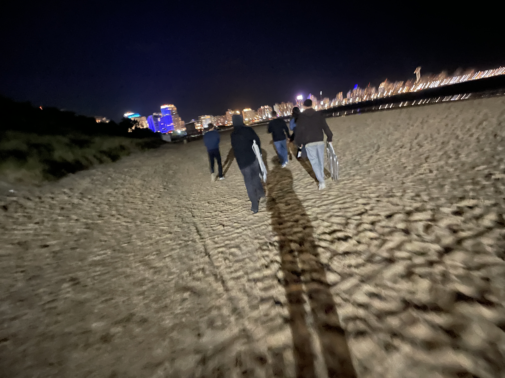
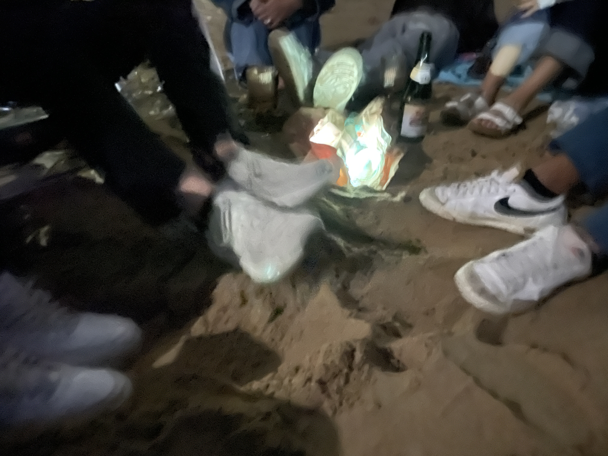
1) Us walking towards a spot to sit down 2) Marina's picture of the rest of us 3) Makeshift campfire
Then we talked about new year resolutions, except Chiara struggled a lot to say the word "resolutions". Thus, in order to troll a little bit, we all started saying any word except resolution, such as revolution, resolvation, reaction, other stuff. I believe Chiara wanted to focus more on herself but that's about all I remember. Here is a list of the new year questions.
Lupi learned to care less about what other people think
Marina learned not to fall and break her face
Chiara said that everyone knows what her biggest mistake was, my guess is that being with Santino was a mistake
Martina says she should've let Rafa(her previous boyfriend) go sooner
Lucas says he wants to Gain 2 pounds
Fabri wants to go to the gym more often
Luca had some regrets i don't remember
Lupi said he actually had no regrets #coolguy
The person that has helped everyone the most throughout this year was either themselves, their mother, or their sister/brother, or their father.
Marina wants to party less or party more, I don't remember which.
Martina wants to leave Uruguay, be more independant, and go study somewhere else, apparently she regrets staying in Uruguay for some reason, even though it's the best country ever
Alright timo, don't forget to put something else here if you remember
After that, we started asking would you rather philosophical questions
Would you rather die tomorrow or live forever?
Gay son or thot daughter?
If you could only eat one food for the rest of your life, what would it be?
What is the best thing that ever happened to you?
Whose death would cause you the most devastation?
There were also other tales, but I'll tell you everyone's main gist.
Mati
The most important thing he said was that he needed to care more about who he surrounded himself with. Since he had unkowingly surrounded himself with people that might not have been the best apparently
Martina
Martina's whole theme behind her words was based on gaining independence and her plans to gain further future independence and possibly move out of Uruguay
Fabri
Fabri's semantic feel had a humorous atmosphere for most questions. Fabri is a really kind individual, he is the Uber of the group and I hope he knows that he is really appreciated for it. He is also probably the funniest guy in class too.
Lucas
He barely spoke, but he did occasionally walk around
Chiara
Chiara's ultimate thematic statement was that making good decisions is good, and she probably should have made some better decisions. But because of all the good decisions that she hasn't done this year, she is now better equipped, and the chances of good-decision-making have increased for her.
Luca
Luca said once something similar to Mati, that's all I really remember unfortunately. But it's a good message so I guess it's worth saying it twice
Marina
I actually don't remember anything Marina said, she was the one mostly driving the conversation forward, perhaps proving her enthusiasm to learn about how her fellow friends have evolved over time. If I don't recall incorrectly, I think she said that she wanted to focus more on her studies, or less in her studies and more parties, or more travelling, or less travelling. She said one of those for sure. She is also not a fan of Baboons
Timo
It's time for you to listen to the voice of the author. I didn't say much, I just answered the questions I had and all. But if there is one thing I said that I think stuck to everyone else, it would be that I am working on becoming less shy. Even though I have improved, im still working.
After that amazing session of getting to know everyone else a little better. We all packed our things and headed towards the house of Mati
Space:The house of Mati
Time:Night
We said our goodbyes to each other. I say goodbye to everyone since I may never see them again. But hopefully I will.
Rating4
After Punta del Este
Date:13/01/2026
Climate:Clear
So, after I came back home from Punta del Este, lot's of things happened. Most importantly, Leo is gone. She is now as of (13/01/2026) in Denmakr. Talking about Denmark, yesterday Trump has revived his interests in the ownership of Greenland, for me this is really funny because it's such a random ass country. I asked Raz about it yesterday aswell and he told me some new information, but we will get to that in the future, first let me tell you some other things that occurred
Sofe and Bruno are gone, Bruno left to the US and Sofe to la France. Lucas, Raz, and I went bowling. I got second, Mono got first, and Raz got last. In a second round I got last, Mono got first, and Raz got second.
I've also been chatting up with my instagram friends a little bit more. I sent my bingo card to the table tube gang to see what they could add to it. They had some cool additions, I'll make sure to include the Bingo Card in one of these entries once it has finished.
Other news are that I have bought a SuperNote Manta tablet that I will put to good use in my future math endeavours.
Lastly, the main event that I wanted to include in this entry
Space:Airport
Time:12/01/2026 20:30
I am at airport, and so is Raz. We are both waiting for our dear friend Lucas to arrive. Lucas is unfortunately departing today, he is going back to the US and he is not happy about it. But we arrived before him so now we just sit around. I bring up the newest hot topic, Trump wants to own greenland... again. It's always really interesting talking to Raz because I know he is always going to believe the opposite to what I believe, in this case he justifies The US's aquisition of Danish territory by arguing that the US needs it to safeguard the antarctic from Russia. The Russia and Ukraine war is still going on. I have no idea why Mr Pudding wants Ukraine so bad, just let it go man it's not that deep. People are dying because of this.
Regardless, Greenland is okay with the US establishing military outposts in Greenland, however Trump was explicitly stating he wants to "own" the territory, and that is something that essentially no one in Denmark wants. I told this to Raz, he said they might be happy to be part of the US. I don't think so very much, because people tend to hold a some "Patriotism" to their country. I compared the situation to the UK's invasion of the Argentine Falkand Islands. To this day I have no idea why they did that, and to this day most Argentine people are properly pissed at the UK for doing that. Raz is not amongst these people, apparently he couldn't be less bothered about all the people that died for little to no reason at all during this conflict. Not very patriotic of him in my opinion (He is Argentinian), but also I feel like even if he wasn't Argentinian, it's pretty easy to see that the UK is in the wrong. Just like how the US would be in the wrong if they tried invading Greenland, which they won't, because I have HOPE.
We walk to this Mc Cafe and sit down on one of the tables while still discussing the topic. I pull out my Chess board, and I try to have one of those epic movie scenes where two parties are having an argument while playing chess, and any time one of us made an exceptional point, we follow it up with a "Check" on the king. And when one of us wins the argument, "Checkmate".
Raz makes the point that the US has done this before unpunished, I counter by saying that doesn't really make it right, and history won't repeat itself. Raz gives me the smugest look of all time as he questions my Historical Knowledge. To my surprise he isn't engaging in the chess part of this situation as I was hoping he would, he isn't moving any pieces. Which is sad because I was really wanting to have that movie scene. I respond to his his claim that history always repeats itself by saying that we better hope history doesn't repeat itself, otherwise we will have world war 3, and 4, and 5, and 6, and 7, and 8, and 9, and 10, and 11, and 12, and 13, and so on. Raz retalliates saying that although it's important for countries to respect each other, it's also important to recognise that people will have bad intentions, and one must be prepared for them. I still don't see how the ownership of greenland is necessary here, why not be satisfied with a cooperation with Greenland. Raz agrees that military bases in Greenland would be okay.
After reaching a consensus, we played Chess without talking all that much. It's a shame that the discussion and the chess game happened at different points in time, but this probably improved the quality of our arguments aswell as our moves, because multitasking is not usually good. It was an epic game until I forced him to trade his rook for his knight and he gave up. Like c'mon maaaaan, it's not that bad, I was even considering not doing it because horses tend to be more valuable in closed positions like the one we were playing, but whatev.
Lucas eventually arrives, but he has to leave fast because he kinda late. So we just say our goodbyes, take some pictures, and leave. Overall I hanged out with Raz more so than with Lucas, but honestly I like hanging out with Raz aswell. I like having political discussions with him, ones that I can hardly have with Lucas since he is not a very political person.
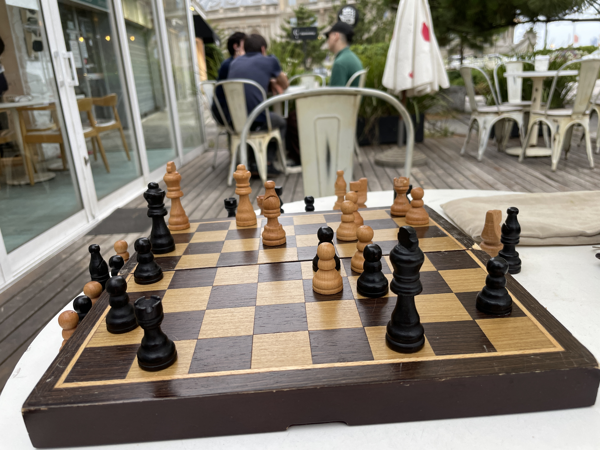
Chess match and selfie photos
And since Luca is leaving, here are some extra photos of the things that happened after Punta del Este
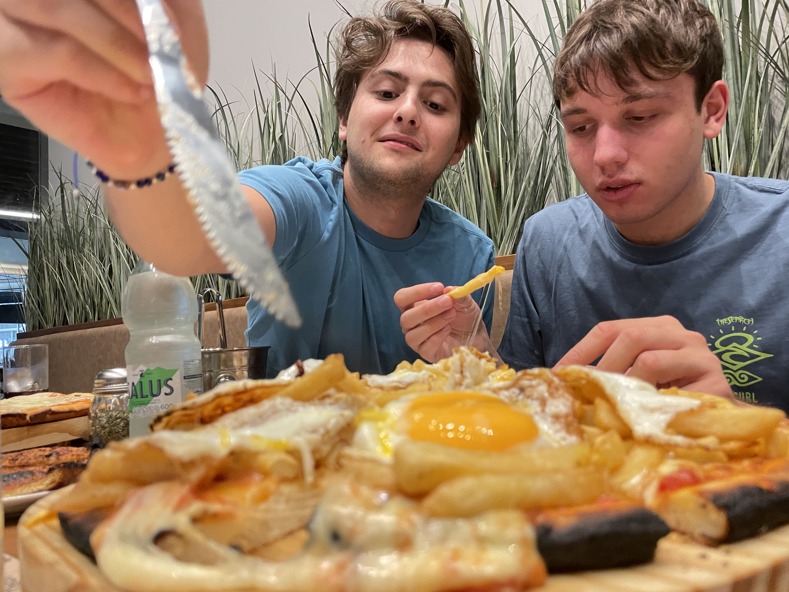
The Trio of Troubadors adventures (That's the name Raz created for us three)
Rating2.5
Mono will be missed, even though he is coming back in 6 months
I'm all alone
Date:16/01/2026
Climate:Clear
I find myself with no friends in Uruguay, Lucas has left, and Raz left yesterday to Israel where he is going to have some epic Israel-related adventures(no clue what he is doing). He is probably going to go camping. Megan informed me that some buddhist monks created traffic in her area. Fede informed me that san has aquired a special vehicle.
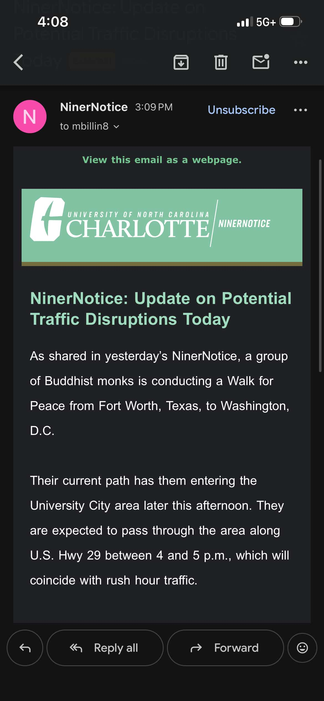
Adventures I was informed about.
I also talked to Raz, I told him to send me pictures and that everything he tells me would be included in this website. The fact he didn't even respond to that message leads me to think that you are not going to be hearing from him or his Israeli adventures. Except for this one detail, he crossed paths with school counselour Valentina Manzo during his trip.
I also started a small political discussion, which I am getting more comfortable with having, which is a good thing. I know that Raz is somehow always going to believe the opposite of what I believe, which I find entretaining. The subject of discussion is the fact that the US banned Uruguay along with 74 other countries from creating immigrant visa's. The official statement is that they want to diminish "Public Charge" which is a way to refers to the amount of money that the government has to spend on immigrants through public service. If this money isn't net negative then that's bad because the immigrant isn't winning you any money, meaning you loosing money.
However Uruguay is really cool, and all of our migrants are considered low-risk because we tend to be surprisingly productive and well educated. Who would have guessed. It makes sense since we do have the highest standard of living in latin america. Therefore I think that Trump's decision to ban the creation of immigrant visas from Uruguay was not economically driven. I asked Raz what Uruguay could have done to deserve this.
Raz responded "Communist Government" with no elaboration. I opted for a similarly unelaborated response "No?". Meant to communicate to Raz the fact that our current president is often described as being "center-left" in the political spectrum and so far away from communism you couldn't even see it with a telescope. Raz (who is travelling to Israel at this point) responded after a while with the word "Adjacent".
It was funny the first two times but at this point I start to get tired of this inneficient style of communication, so I deliver to him my full fleshed out opinion for him to either disect, counter, or ignore.
Uruguayan migrants are surprisingly productive according to what i've read, so what are the possible causes towards the decision to do this to Uruguay. One possibility is ideological differences, which is what Raz is suggesting. This is unlikely to me because not only would it be a little petty and immature, but the Uruguayan government is barely skewed to the left. I would understand it more if we were a government of leftist extremists, sure. But that is not the case, we aren't a communist government or anything close/adjacent to it.
Therefore I can only conclude that the US hates Uruguay and thus we must immediately start a war. Whoever strikes first wins... wait... what do you mean we don't have nukes?
Ratingmeh
Upon some self reflection I realise that by being extremely concise, Raz was either trying to be humorous or trying to signal to me that he doesn't want to talk about this. So he is probably not going to respond, considering how he might actually have better things to do in his fun trip.
Lucas types
Date:17/01/2026
Climate:Clear
Today I mostly spent the day with Lucas on a call, he is starting to study and for some reason I found it hard to study today. I showed Lucas my brand new dictionary page in my website comporised of a lot of words that I like. Lucas then had the amazing idea to look at all the pictures in "The Chronicle" this took us 2 hours in total. This was an interesting conclusion, skimming through the chronicle takes 2 hours total.
Then we worked on some definitions for the Glossary I have, which was pretty cool. I wonder what Raz is doing right now. In case you were wondering, he did in fact not reply to the political message I sent him. Which was to be expected.
Rating0.1
Not a specially good nor bad day, just neutral. Remember that this scale is from -5 to 5
On Air
Date:21/01/2026
Climate:Turbulent
Space:The air
Time:Uruguay 20:07
I am on an airplane right now, that's why I had to specify that the time is 20:27 in Uruguay, but not where I am at right now (The middle of the Atlantic Ocean). That's right, Lucas and Raz have left Uruguay, so I decided to leave aswell. I am on my way to Italy to skii, I will unite with my firend Lucio Gonzalez whom I don't believe I have mentioned so far. He is basically the son of one of my father's friends from when he was doing his masters. He is a good friend of mine, the most notable is staying up till 6 AM eating ramen and watching one of the worst shows called "The 100". I am going to write and Individual Entry for him.
He is also going to give me a new Supernote Manta tablet that my mome bought me for christmas, and I am really excited to use it to do math. Because that's another thing im on. I have to do math. Quite a lot of it. We have to study at least 1-hour per day. It's going to be touph but I know it can be done. Im also probably going to learn snowboarding for the first time. And last but not least, I am going to visit my friend and fellow Table Tube Gang member Fede. One of the smartes people I know, I always forget what he is studying so I can't wait to ask him for the 13nth time in person.
Anyways, I just finished watching a movie about a jew lying about the fact that she was in the holocaust and it was a really good movie. I also watched another about some turtles becoming popular in high school. There is really not a lot to say about this flight.
Rating
Skiing with Lucio, but we didn't ski at all
Date:25/01/2026
Climate:Snowy
So we are in Italy in a ski resort, the only problem is that it's snowing and the visibility is incredibly low, therefore it's immposible for us to properly ski. Therefore we did other things that weren't skiing. We went to buy skiing equipment, hopefully for some skiing in the future. We also played some epic ping pong matches that Lucio didn't exactly win. But he was close once.
Also a random guy got shot by ice again. The first famous victim of ice was Renée Nicole Macklin Good who was killed by an officer. The most insane part about this isn't the killing in my opinion, I mean it was pretty bad and poor nicole died when she didn't really have to. But the most insane part is that Trump didn't condemn the police officer who did this, he condemned Good instead??? Creating a narrative where Good was trying to kill the police officer with her car. here are my opinions on the subject
Anyways, I also figured out that Lucio is actually a really smart guy when it comes to politics, he says that Donald has some great ideas but some terrible execution. It's a good idea to get illegal immigrant out, but sending them to concentration camps and killing them is not the best execution. Improving the economy is good, but doing so by recklessly putting tariffs on all countries demolishes trust among other things. Lucio gave me many other examples, and it gave me a different perspective. Everyone knows what needs to be done, but not everyone knows how to do it. Certainly not Donald
Rating4
Interesting Developments
Date:27/01/2026
Climate:Clear
So, we've been skiing. It's been really fun. Yesterday we skiid through an area, it was cool, and today we skiid through another area, it was also cool. Some notable moments include a time where Lucio and I decided to record some #epic videos
[Put Video]
The second most notable moment is when Lucio crashed into someone. It was a catastrophic scene, as Lucio skiid through the side of the path, a random Italian man whom we will hereinafter call Giovanni, stood approached him. This was not a problem since Giovanni wasn't on his trajectory, but he was close to it. However a girl blocked Lucio's trajectory, leaving him with three choices
Skii off the path and fall off a cliff
Destroy the girl
Crash into Giovanni
So he crashed into Giovanni, an epic discussion ensued where Giovanni and her sister were arguing and insulting Lucio, but in Italian, meaning that no one understood what they were saying, so we eventually left.
Rating4
In the air (Short Ski summary with photos)
Date:01/02/2026
Climate:Reeeeeeeeally cold
Space:The air
Time:Like 12.46
So I am in the air right now, it's really cool being in the air like this. Im kidding obviously, these flights are the worst part of travelling by a LandSlide. Still, I will make this time a productive time by writing an entry on this asombrous web page. There is a reason why I haven't been writing as much, it's because I've been having fun with the G8 group. For some context, my father made 8 friends in college, they named themselves the G9 after a joke where countries were called the G7 or something. Years later, all of these individuals had kids.
Parents
Children
Cristian
Paula
Timo (Me)
Alberto
Lucio
And others (not relevant to the story)
Federico Colombo
Nicolas Colombo Colombo
Agustin Colombo Colombo
Mariano
Benito
Paco
Nico
Years later, all of the mentioned parents decided to go skiing together, and all of the mentioned children came with. We had a lot of fun and we bonded over a lot of shared interests, specially with Nicolas Colombo Colombo. I haven't written much, so this will be an overall summary of all the most important things that happened in this amazing skiing experience.
On the first day Federico Colombo got his knee injured while going down the first skipath, it's unfortunate, he later got it checked out and it was concluded that he would have a surgery performed on him as soon as he got back to Argentina
Almost every night, we would all go to have dinenr together and it was really fun, when I wasn't dying from exhaustion. But that only happened one dinner so im good.
I said that all the parents mentioned went skiing together but that was an absolute lie, Alberto didn't go for he was on a cruise or something. But Lucio did come with us, and he stayed in our apartment. He delivered me the SuperNote Manta, a device capable of being written on. It's really good and I love it so much, I can not believe how much math I am going to do on it, it's going to be so wild.
The skiing was good overall, I must say that I've improved upon my skiing levels in a manner that can only be considered legendary. I can skii without pushing any snow, this is done by slicing the ground with the edges for the skii, it's hard but I've gotten really good at it. Lucio insists I am not a proffesional, but I think that only a proffesional has the authority to opine on my profecionalness, my father is pretty good at skiing too, and he said I'm really good, so that's something.
Another thing that happened among these days is that Lucio and I attempted snowboard. The first snowboarding day we just had a lesson with this one guy. He snowboarded for several years and he claimed that it was harder than skiing. The lesson was fine, I just found it a little too slow for some reason. But it's important to have some good basics so I guess that is good. The man said that only 3 times in his 35 years of snowboarding has he had a student succesfully go snowboarding in less than 2 hours.
After the lesson, Lucio and I could succesfully snowboard alone, sure we fell sometimes but some other times we didn't fall. So I think that we are the fourth in his life. Lucio begs to differ but honestly his opinions about my skills are starting to become more irrelevant to me the more that he disagrees with me.
I'm making Lucio sound like an absolute terrible guy that hates me. I'm just joking obviously, the man is really great. I told him about the game BALATRO, a poker roguelike, and he immediately fell in love with it(got addicted as hell). We also talked a fair bit about politics, the man is incredibly open minded. I think he doesn't really believe that he is all that smart because of the grades that he gets (not very good ones) but I think grades are only there to lower the self esteem of brilliant minds that would rather indulge in their own interests rather than study somethings that they might never use. Lucio for example knows how to code and I can often spot him creating like a videogame or something in 3D, I don't know exactly what he is doing but I know it's something I wouldn't completely understand. The man also has some cool musical talent that he often displays throught the Bass Guitar and the Bass(string one). He has also visited the dark web, his most traumatising visit was the Cafe(of the Cannibal kind). He told me about this in a Jacuzzi and it kinda blew my mind.
He also recommended me a game, it's called "Welcome to the Gam II" sounds like something I would never play or buy. Here are ski media.
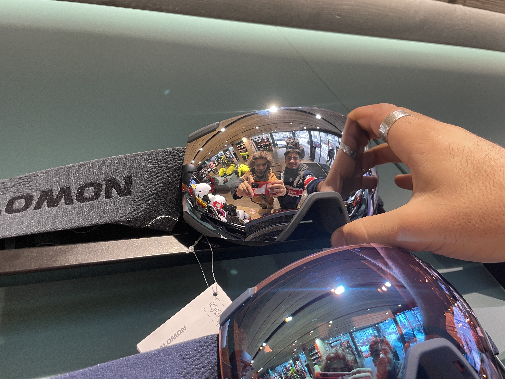
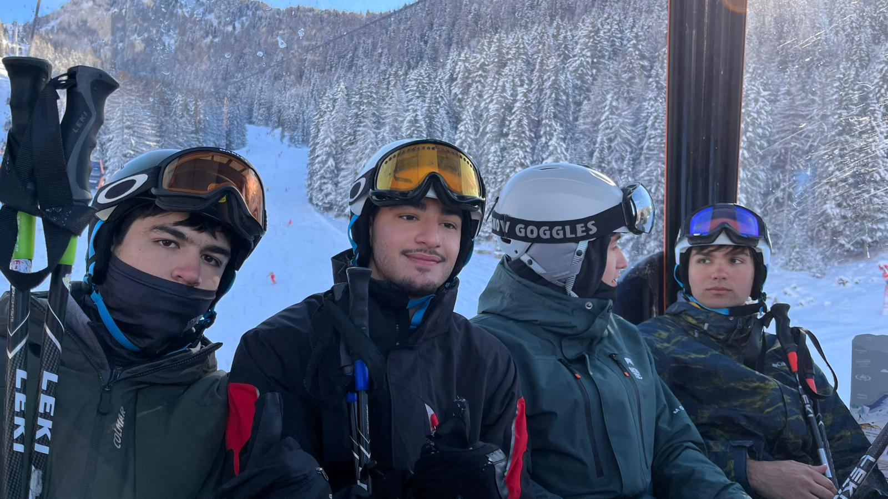
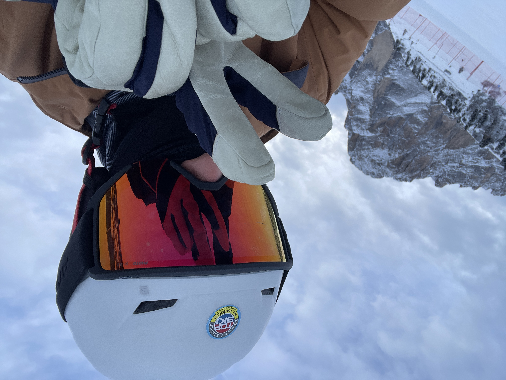
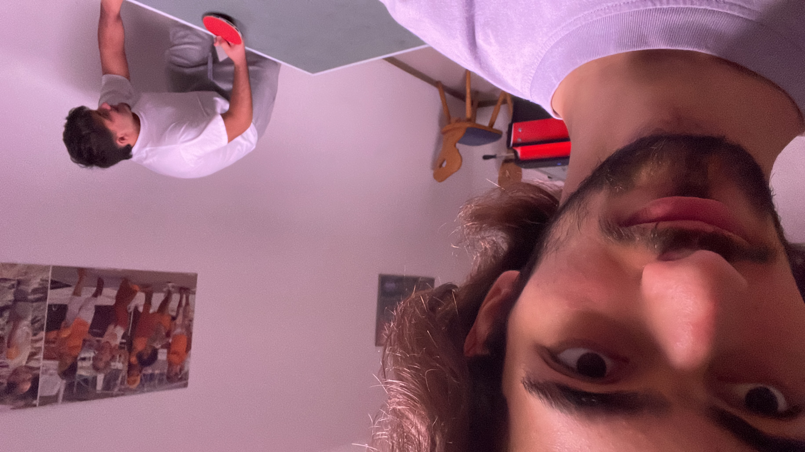
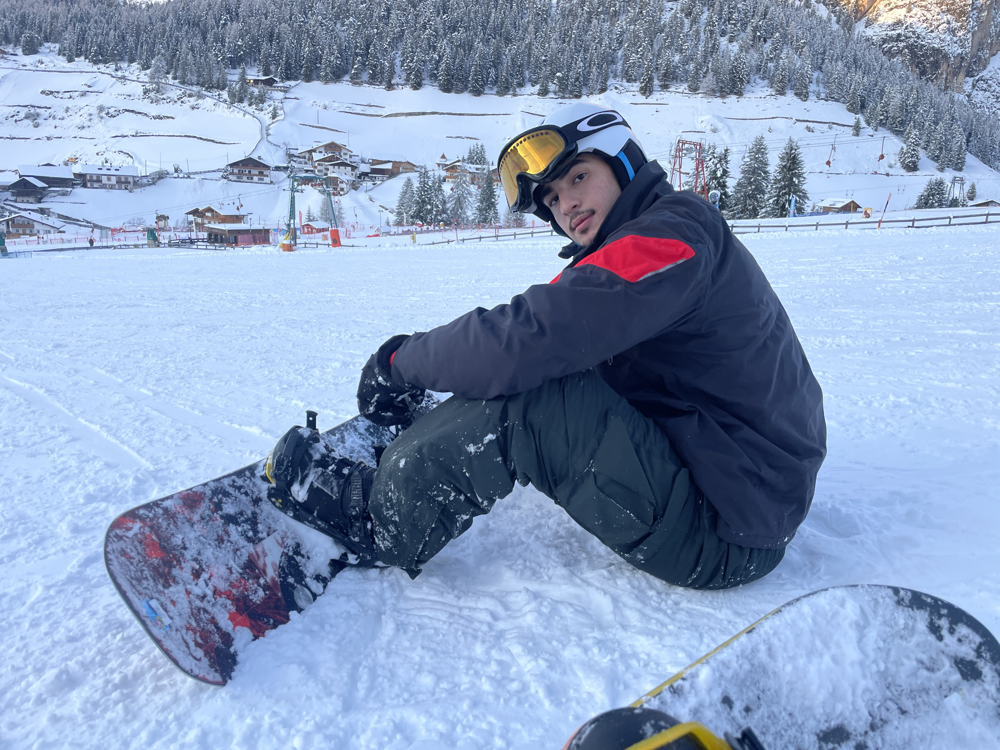
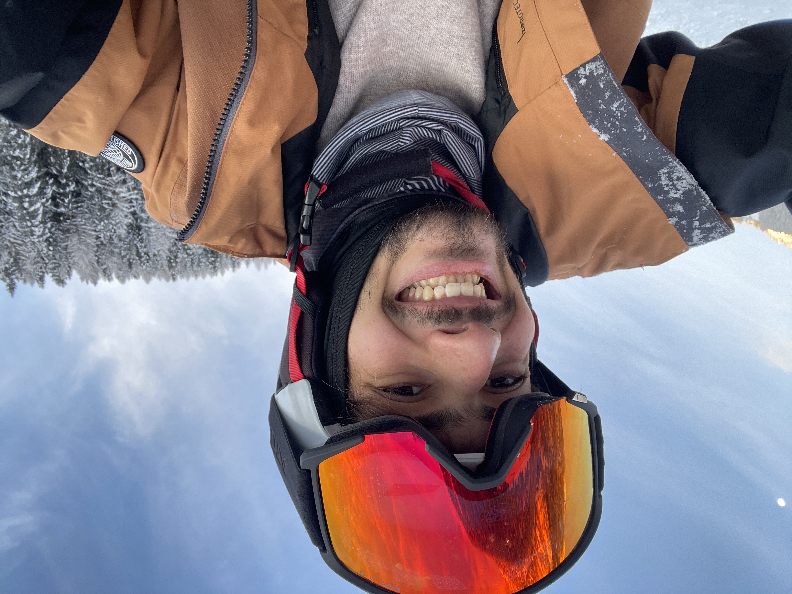
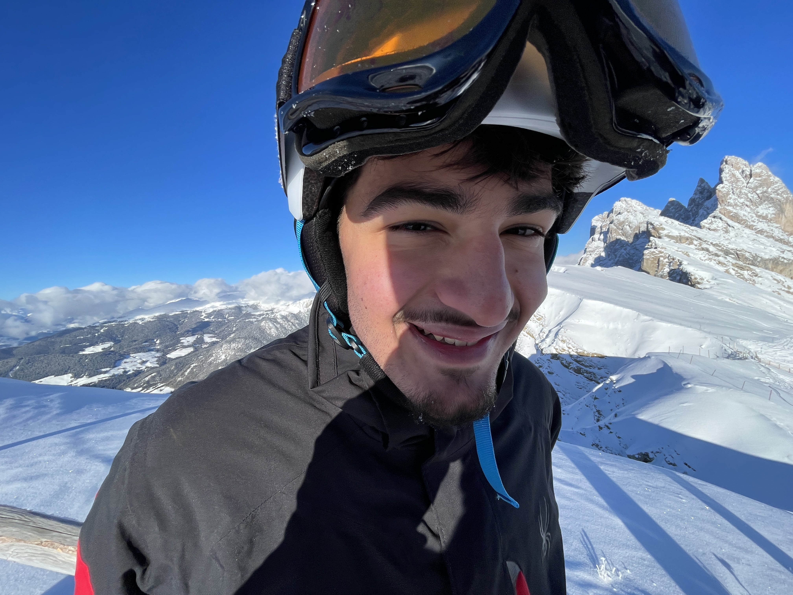
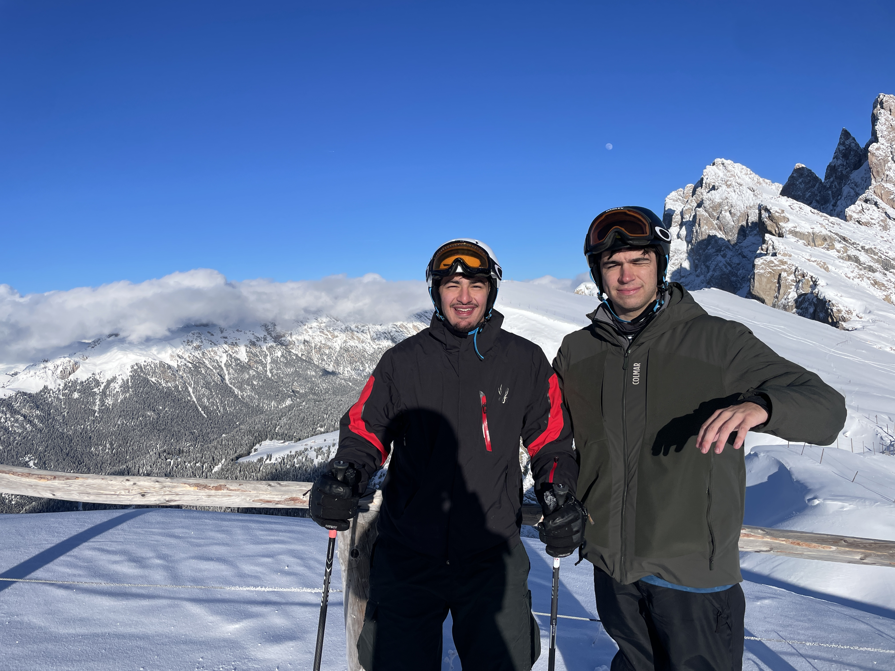
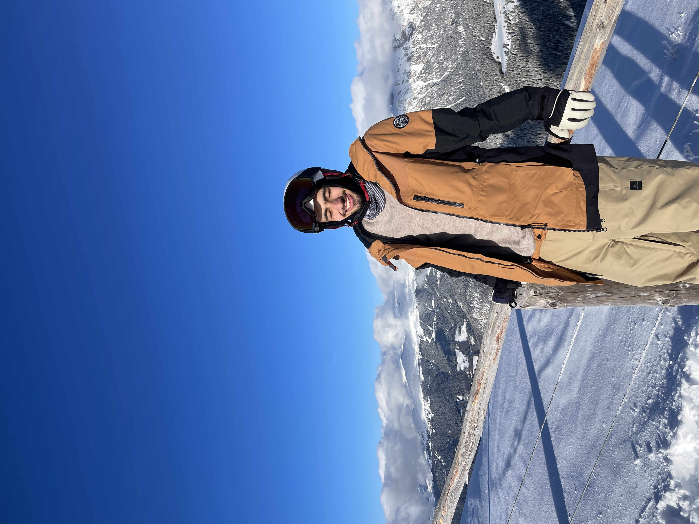
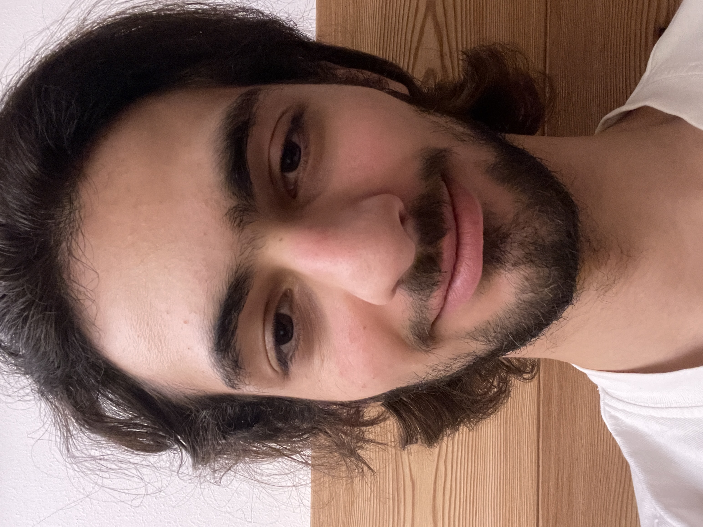
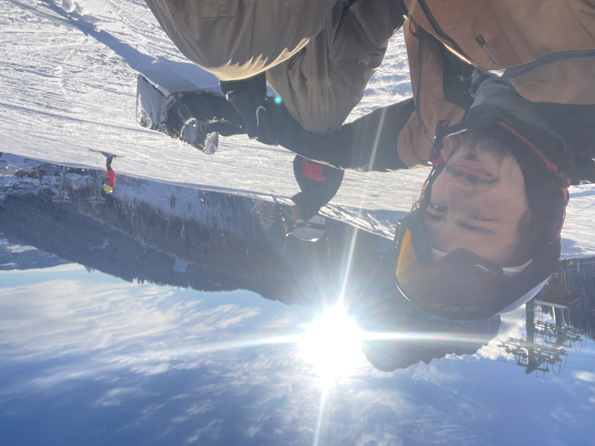
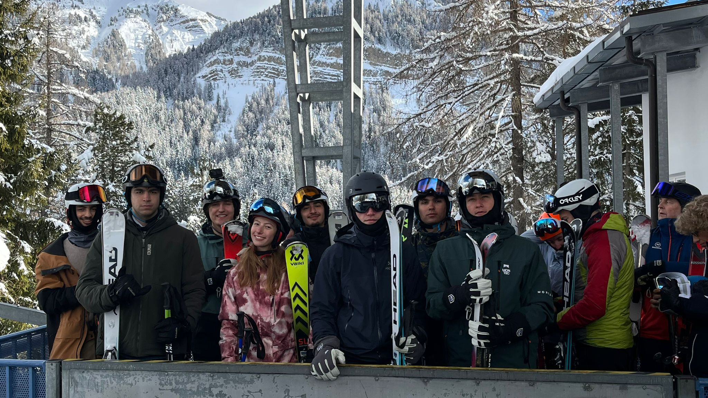
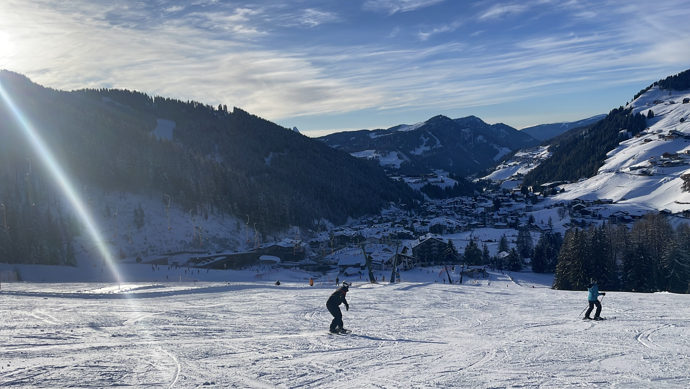
Rating4
Fede found
Date:01/02/2026
Climate:Cold but not that much
Space:The Apartment of Fede
Time:19:11
I arrived after a lot of trials and tribulations, to Fede's apartment. He lives in Amsterdam and I decided to go visit him for today, this is going to be fun. He shows me his abode, it's a cool place with a nintendo switch and stuff. His room is full of things on a giant grayish blue desk. Most notably he stacks energy drinks that he gets for free at his Job. Tomorrow he has things to do, but that isn't stopping him from hanging out with his friends.
So naturally I also accompany to meet his other friends, and that is how I met
Some cool individuals. At some point they started talking about Israel and Palestine. They are all so well versed on the topic, it is really fun. I also got confirmation of the obvious fact that not all Jews support the actions that Israel has taken regarding the Hamas terrorist situation. Hannah is Jewish that's why im saying that. They also talk about the narrative that anti-semitism is rising. They said that it's a false statement, but equating anti-semitism with anti-israel behaviour is leading to a rise in anti-semitism, mostly because people that already hated Jews will use recent events to create an even worse narrative about the jews that they can use to convince other people jews are not good.
Apart from some interesting political conversations in the presence of alcohol, we also cooked smores and pancakes, I didn't eat much for I was full, but it was fairly good from what I've heard of others. They are all really smart and cool people, unfortunately my charisma levels were low because I was tired from all the travelling. Still it was good meeting them and I hope to meet them further in my travels. Another thing is that I can tell im tired when my left eye starts twitching very easily, that's a nice telltale sign I can use in the future.
Rating4
Into the Amster
Date:02/02/2026
Climate:Sunny and Cold
This day was mostly spend just, going thorugh the Fede lifestyle and seeing what cool shennanigans he gets to take a part on.
Space:Apartment
Time:The morning
I stayed up late last night working on this very website. I texted the table tube gang a little bit, both Fede and I sent pictures of each other while sleeping. I took a picture of Fede at night and he took a picture of me in the morning.
Fede and me sleeping at different points in time
Then we went to the tram
Space:Tram
Time:The Morning
I don't necesairly remember what we talked about in the tram, but I think that I tried explaining to Fede a little bit about homestuck, he got really confused. Eventually we get to Fede's Universtity
Space:UvA - The Machiaveli Room
Time:Later that Morning
I went to this room where the Machiavelli team can be found. I encountered nate and other new characters such as Alice, and I don't remember anybody else's name. I mostly tried finding the intersections between circles, mostly failing. Then we attended
Space:A class
Time:Later that Morning
This class was mainly about some random case called the Cape Wind case that involved several tribes and stakeholders.
Rating
Iron Lung
Date:03/02/2026
Climate:Cold
Space:Pathe Du Mont Movies
Time:17:30
Today something amazing is going to happen. If you didn't know, incredibly youtuber Markiplier once played Iron Lung, and he liked the story so much that he decided to make a movie about it. The movie was great, I unfortunately don't have much evidence that I was in the movie because I was too occupied actually watching this masterpiece. I liked it a lot, all of it. The only part that threw me off a little bit is a shot of Simon with blood on his face getting mad and destroying the speaker, that close up shot for some reason didn't look that good to me.
Regardless, the movie was spectacular, I liked it a lot. It had some really cool cinematography, all the different angles used to keep the watching entretaining were very effective. All the shots of blood and water pouring through the Iron Lung, any and all scenes outside of the Iron Lung were also really cool. The effects(both practical and not) were all really cool, at no point did I really get thrown off by bad CGI or bad acting of any sort. All the dialogue was very believable and sensical in that situation they were in.I really did feel a lot of suspense, which is what I believe it wanted me to feel. The ending I failed to comprehend a little. But here is my interpretation of it, SPOILER ALERT
The eldritch god tries to convince Simon to join him, telling him that no one else must see the light, only he, and he will be the last one. Simon does not follow the voice, but apparently the voice has powers, and it can control some blood tendrils that capture Simon's arms. He manages to liberate himself off it's grip by... ripping off his arm... yikes. Before doing that, he managed to tie his Black-Box containing Crucial-Information to a Life-Jacker. He destroys the window of the Iron Lung, presumably to let the package flow out. The eldritch voice tries to convince him, it uses the voice of Ava somehow, and it keeps trying to convince him to join the light or whatever, but Simon doesn't and he gets eaten by a fish. However in the end, we see that the balck box floated up and was found.
Now my personal interpretation is the following one. Joining the light could mean several things, for starters it could mean going to wherever everyone who disappeard due to the rapture went, it could also be knowledge, understanding what caused the rapture. It could also just straight up kill you, it could also be all three at the same time. In my opinion it's all three at the same time. Regardless of that, Simon decided to not go gently into that deep night, he instead refused to follow the voices that essentially told him to give up on hope for humanity surviving this, and he succesfully delivered the black box. Another aspect to this whole thing is that the Blood seems toa act to a certain extent like The Mass from white knuckle, it can consume things and incorporate them into itself and use them. This explains how the fish, the blood-vines, and Ava's voice were all working together to stop Simon in his final moments, they were all consumed by the eldritch god of blood or something.
Overall the movie was fantastic, there was a special scene that was a clear reference to the game's original ending where the fish breaks open the Submarine and eats you, I really liked the CGI there, it was very cool. Of course the lore was meant to be confusing and kind of incomplete, it didn't really give you much more than what the game already offered. Simon struggles with constant guilt of having exploded Filament Station. Everything he does is reasonable which is really cool in a suspense/horror movie. It definately has a lot of metaphorical shit and room for interpretation and whatnot, but overall it was a cool movie that dealt with the themes of hopelessness, guilt, and selflessness.
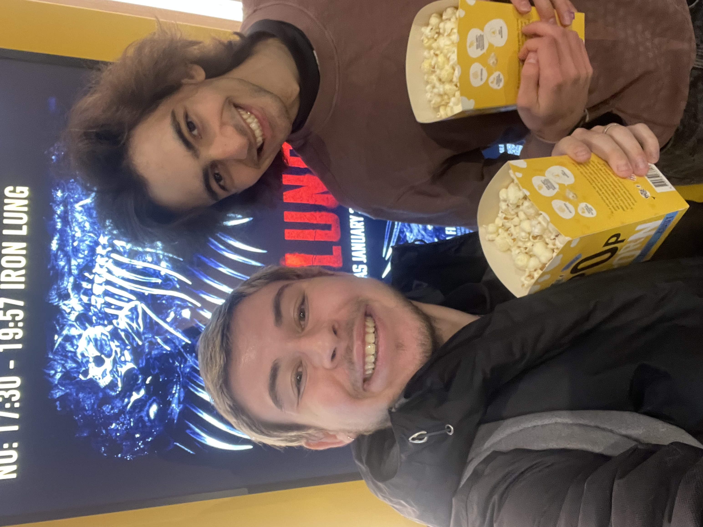
Some Media of the Iron Lung Movie
Rating of the movie8.1/10
Good for Mark's first movie, hope he does more.
LAST-DAY
Date:05/02/2026
Climate:Cloudy
Space:Common Room of UvA
Time:8.02
I am listening to a group of Unkown Individuals talk about someone, someone they don't particularly like. Someone who seems kind of rude to others, and also has certain hot takes, and he also seems to not have a complete grasp on social cues. Reminds me a lot about Daniel who other people also find kind of annoying. Still, this guy seemed like an amplification of all of Dani's bad qualities, this guy, from what i've heard, isn't really all that smart, and he goes out of his way to annoy others, and he doesn't have many friends. Dani has friend, he doesn't go out of his way to annoy people, and he is smart. I just wanted to establish very clearly that Difference.
I am planning to go buy some Jeans. Today Fede and I left his apartment in a hurry, I'm often used to skipping steps on any staircase, but I just happened to skip some steps that were wider and more slanted than I expected. Combine that with the Back-Pack that I was carrying which contained a significant amount of mass, it made me miscalculate the force needed to sufficiently propell myself in a way that wouldn't lead to my downfall. So I fell and broke my jeans :(
Fede is not a person that has a lot of that Free Time, so this is my day, I will do my own thing. Also yesterday I went to the abode of Laura, I friend of Fede whom I think was pretty chill. There was this specific moment where I was taking a photo of a Candle, and Hannah thought I was taking a group picture, so she posed, and I was like "Oh now Im just taking a picture of this fake candle over here" but then I was like 'oh, a group picture doesn't seem like a bad idea' so I told her and I took a picture but she didn't hear me. I think I am very very transparent and invisible in new friendgroups, here is me as an Invisible Individual in a place that I probably didn't really belong in the first place.
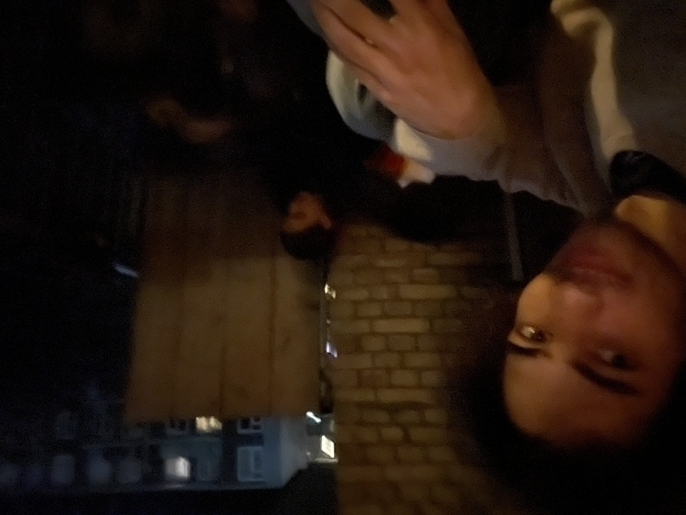
Photo of the candle and failed group photo
I have also just received information that I got accepted to Amsterdam University College...WHAT?!?
Space:Common Room of UvA
Time:idk I didn't check
I canceled all plans and immediately went to AUC to kill some doubts. In case you aren't aware, I got rejected from AUC last Chapter, but this time I got conditionally accepted, and I meet all conditions. This is legendary to say the absolute least. I went to AUC, suffering from the cruel cold that belongs to the streets of Amsterdam. My hands felt frostbitten as I was listening to Wuthering Heights by Kate Bush, trying to find the AUC through the stupid logic of the GOOGLE MAP. I eventually got there
The Service Desk was closed. So I sent an Email from AUC to AUC asking them how to verify the OMPT-B 70% score I obtained :/ Then I took 2 billion hours to get back. The Google Maps betrayed me several times. And according to lessons I've learned thanks to the Evolution of Trust game, I should not trust it anymore. Not trusting it proved to be the correct decision because I got here succesfully.
Once I got back, I told the good news to Stefano and Fede, and then I spent like 3 Hours beating a random individual called Maxim at Chess. There was a random Chess club that was happening and I joined it and destroyed this one guy specifically. It was fun, it's been long since I hadn't played chess with real pieces.
Rating
Impatience
Date:07/02/2026
Climate:Rainy
So I am at the madrid aiport's vip zone, and I decided to write one of these little entries. Let me tell you about my time in madrid
Space:The streets
Time:The day
After arriving to madrid and depositing our belongings in the hotel. We decided to go shopping. My sister went to Zara while I sat down trying not to fall asleep.
Space:The hotel
Time:The night
I won the last stake of the Balatro difficulty. I did this with the Green deck, the best deck ever.
So that was the first day in a summary, now watch the second day
Space:The streets
Time:The day
weather:Rainy
We spent most of the day buying clothes in the streets. I actually got two new jeans that I am really excited about.
After that we went to the airport. In case you couldn't tell, I didn't really want to write this. I don't know why but yesterday and today I've been feeling extra-impatient and angry for some reason. I told this to my MOM and my SISTER and they told me that I'm about to have my period. HAHAHHA very funny, but the real reason is probably that I haven't slept very well these past few days. I should be happy for everything that happened, and I am. But right now I am soooooooooooooooo irascible for some reason.
Rating
Back Home
Date:08/02/2026
Climate:Sunny cold hot (AKA: FECKING TERRIBLE
Space:At teh airport
Time:The Morning
So I am back home to THE BEST COUNTRY IN THE WORLD (AKA: Uruguay) sure it may have some shortcomings, but lately i have no idea why I have been feeling so patriotic and so Uruguayan. Maybe upon being in so many other countries I just begun to miss this amazing place and how nice everyone is and how fecking cool this country is overall. I have also toyed with the idea of someday Unifying Argentina, Chile, and Uruguay. Fede disliked the idea, claiming that Argentina has a history of being ultra unstable like about once per decade, which wouldn't impulse economic growth. In the future, Raz will have the argument that Argentina is in it's process of PERMANENT RELATIVE STABILISATION. Once Argentina estabilizes itself, that will be the perfect opportunity to start negotiations and Unite all of our forces, with Argentina's resources, Uruguay's Functionality, and Chile's Openness/Intelligence, we might have a chance to rival in the darkest of forces that this world has to offer. It's one alternative to ending the world that I've been thinking about. Doesn't that sound nice?
Okay enouph nonsense, my mother forgot the keys to my house so she had to call te lady that comes to clean our house every once in a while to go get us her spare key. We did that and then we went home. Once home I started working on my incredible INSTAGRAM POST. You see, upon further reflection, I've started realising that this was probably the best trip I have ever had. It was amazing, I'll make a list of everything I loved about this trip.
I got really good at skiing and that was fun
I FINALLY TRIED SNOWBOARDING WOOOOOOOOOOOOOOOOOOOOOOOOOOOOOOOOOOOOOO
I got to hang out and talk to one of the Best Individuals ever (Lucio Gonzales)
I got to meet cool people, among them Agustin Colombo Colombo aswell as others that id didn't really meet as much as him but wtv
I got to meet Fede who is a really epic and cool individual residing in the Neatherlands
I got to watch IRON LUNG, a movie that was really good in my opinion. And the fact that it was really good proves something that should have been obvious to just about anyone. If you want to make a good movie, it's not about money, it's about passion.
I got to see Fede's university life which was really cool cause it made motivated me to try more to get accepted to the Neatherlandish universities.
I GOT ACCEPTED TO ONE OF THE DUTCH UNIVERSITIES!!!!!
And I found the Almond MnMs that Lucas failed to find
And obviously there are a shit ton more things that are really good. I just can't talk about it all. But I really loved this trip, and, I think it changed me as a humane bean. I'm evolving into a human being, idk wt the fuc im sayin. What I mean is that this trip was so good that it inspired me (somehow) to better my life. I am going to start being more organised and stuff now, it's going to be epic. This is were my Canon Life begins. Here are the amazing edited pictures that used on my story.
The adventures of the G8 group, and so much more
Rating∞/1
Almond MnM packages2
I am so ready to do stuff, idk why. Also Raz and I are hanging out tomorrow, if my forshadowing didn't make it clear.
Intellectual Political Discussions
Date:09/02/2026
Climate:HOT AND TERRIBLE
Guys, idk why but I've lately been #facinated about politics, it is a little disrespectful that I can be this facinated about something that has killed, tortured, destroyed, murdered, but also created, saved, improved, contructed. I guess it ain't all bad. However lately I've been thinking a lot, hell it's practically all I do. I neve like getting political until recently. Here is the things that have happened recently which nudged my interests in politics.
Lucio's Opinions: So Lucio, and practically his entire family, is from the right side of politics. However they still hate trump on the basis that even if his ideas are good, he still does everything wrong. Here is a listed list
Ice stuff: So according to Lucio, Trump sends immigrants to concentration camp equivalents. They are technically like detention centers, but in terms of actual conditions, they might aswell be concentration camps
Other Ice Stuff but more political: Lucio also agrees that Trump's failure to condemn Ice when they actually do a mistake is not good :( Ice is not perfect, like many things. And it's important to accept when they do mistakes, such as killing citizens that didn't deserve to get killed.
DOGE was fecking terrible it's actually hilarious, they did some bullshit, they claimed they did a fuckton, and then they left.
Lucio also said that fixing things with Tariffs was a good idea, but they way they did it is terrible, unorganised, basically made everyone lose Trust on US's stability, overall not the best Execution(the main job of the president btw)
Internet Divide: Both sides have FACTS, and they are all TRUE. I've checked them. This means that both sides are right. No one is wrong, it's just that both sides have evil people, and the people might be working together to keep us divided, and that is not good!!!! And it's never going to get fixed!!!! when will al these people realize we Share an Enemy!!!!! Can I do anything to enlighten all of these INDIVIDUALS??????
Disasociation: It's #crazy to think that I ever considered myself like being on the LEFT side of things. Both the right and left systems can fecking work, it just depends on the non-corruptness of the people. As long as we have evil people, evil things will happen, in comunism, in capitalism, in fucking idk Timoism(ima make a perfect system someday). I have completely disasociated myself from any parties, in an attempt to UNIFY everyone against the EVIL PEOPLE. I am not from the LEFT, or the RIGHT, or even the CENTER. I am from the fuckin FORWARD, and I'm fuckin ready to start doing some progress!!!!
That being said, all of that being put out in this imaginary poker table (a game that I know how to play and I am goated at.) I have a little bit of a reunion with Raz today. With my new political knowledge that I feckin made up. I intend to reach some powerful conculsions that no other Individual can reach, for Raz and I may not be the smartest, but we are OPEN. And OPENNESS is all you need to reach powerful conculsions.
Space:A Cafe called Selva
Time:16:45 (I arrived late :(
We both meet at a halfway point between our homes. A place called Selva. We all catch up with our lives. I tell him pretty much everything I just told you in the entry above this one. And then it's actually Raz who gets political first. He brings up how he has been talking to Sebastian Alfonso, not to be confused with Sebs. If I keep hearing about Sebastian Alfonso I might have to write an individual entry for the man. Anyways, Raz has been telling me about how he played this game with Sebas(Sebas will be Sebastian Alfonso and Sebs will be Sebastian Sass).
Anyways, he also tells me that with Sebs, they discussed the Epstein files. He tells me a bunch of things about the Epstein Files. He tells me that they basicall pushed every leftist agenda, pushed the Islam agenda, pushed basically everything he doesn't stand for. It's hilariously frustrating to hear this, given that Fede also basically told me that Epstein pushed everything he doesn't stand for. I didn't realize this at the time, and I absolutely should have because it would have been a great talking point. But isn't it way more likely that Epstein pushed both of these Agenda's to cause political divide??? something that rich evil people are known to do/benefit from??? Stupid past Timo, how didn't you think of that earlier?!?! Doesn't matter, the past is history.
Anyways so he tells me that Epstein also created Covid 0_0 It's a massive claim, and I tell him that. And he says "Not really" 0_0. He points to a chinese Biological Laboratory in the US and certain talks in the Epstein files about it for evidence. I do think it's a massive claim, and I am going to have to see a bunch more evidence before I even begin to start to commence to believe it. I think covid and the quarintines were terrible, but like we had pandemics before. What are the chances of this being a conspiracy theory? I don't know, I am dangerously unprepared to have this discussion, it's the last thing I ever thought we would ever talk about. So I can't really do anything other than displaying my scientific skepticism. And that I do, which prompts us to move onto other topics.
The almond MnM saga is complete. I also gifted Raz some nice Free Trade Tony's Chocolonely's Chocolates. He appreciated the gift :)
Then we start to walk. He keeps telling me that Epstein pushed all the leftist stuff. I keep on failing to think about it hard enouph to actually say anything of substance :p . Eventually I bring out a topic that I have pre-emptively thought about and reached a conclusion. You can see my-thoguht process here in some link on that entry. But if you aren't going to do that, let me give you a summary of my opinions. The police officer used LETHAL FORCE against MS GOOD, ultimately causing her demise. My claim is that this Lethal Force was very unreasonably used. Mainly for the following facts
It didn't prevent any death or injury
It didn't follow Ultra-Common police practices(I hope ICE has that)
So my claim is essentially "Ms Good lacked the SITUATIONAL AWARENESS necesary to keep the streets safe while using a vehicle, thus (if she was still alive) she should have lost her license. The officer lacked the QUICK CRITICAL THINKING SKILLS required on the field keep the streets safe. Thus he should lose his license"
Now at first, Raz didn't really believe that the officer did anything wrong. His claim was essentially "Ms Good lacked the SITUATIONAL AWARENESS required to keep the streets safe, this lack of awareness ultimately led to her crashing onto the Police officer. Thus, under the right to SELF DEFENSE the officer took the correct action of neutralising the threat"
My main problem with this argument is that it didn't really seem like it treated both sides with the same amount of scrutiny. But the more usable thing I noticed about this argument is that it failed to take into consideration the amount of LOGIC behind the officers actions. So for like about and hour, I basically told Raz about some ultra-Basic police training that was severely violated by Officer Ross(the one that killed Renne) If you want to see my exact argument i will again redirect you here.
This training is supposed to prevent senseless deaths like this one. Raz's main counter to this was that we don't know what would have happened if Renne didn't get shot. He repeated this a bunch of times and I kept agreeing with it until something clicked. Obviously I lack the energy required to create a viewport that would allow us to see into alternate timelines to determine exactly what would have happened in a situation where the police officer didn't die.
But we can make an accurate estimated guess. And I am glad I realised this at the moment, because in hindsight this is very obvious. If Renne hadn't gotten shot, she would have still hit the police officer, and she would have probably continued to Turn Right, and she would have probably gotten away. Until the Police came back and arrested her for crashing into an individual and leaving them behind. Something that is very illegal to do, at least in Uruguay.
Raz kept insisting that we don't actually know if this is the situation that would have ensued. I really had no idea as to what other thing could have happened if Officer Ross hadn't fired his gun, so I prompted him to give me some Alternative Scenarios. He argumented that if Ross hadn't shot her, maybe she wouldn't have changed her trajectory as much, causing Ross to get more injured.
Now it's known that a living person has more control over a vehicle than a dead person. That's why it's common police training to not shoot at moving vehicles, it's always better to let them escape. This is because shooting at them will very likely cause the car to start accelerating out of control and crash onto something/someone, basically turning the car into a massive mass of high speed dangrousness. So essentially shooting a moving vehicle to stop it from harming people is dumb and goes against Logic and common police training meant to keep the streets safe.
Using this argument, I tried to relay to Raz just how dumb it is to shoot a moving vehicle in hopes of stopping it from causing harm. Raz kind of started to concede and recognize that the officer might not have taken the best course of action in this situation. After hammering on a little bit more the full extent of the dumbness that shooting a moving vehicle entails, Raz conceded that the officer should probably lose his licence. He still believed that Good was the one who was mostly at fault for this tragedy, that's something I can get behind, I don't exactly agree with it but I can understand how one could reach such conclusion.
So, I we both reached a consensus. "Ms Good lacked the SITUATIONAL AWARENESS necesary to keep the streets safe while using a vehicle, thus (if she was still alive) she should have lost her license. The officer lacked the QUICK CRITICAL THINKING SKILLS required on the field keep the streets safe. Thus he should lose his license". I had previously already reached this consensus while arguing about this situation with myself. I highly recommend you to check out the doc by the way.
After reaching that conclussion, we began debating about a ton of other stuff. Like a lot, like just about everything there is. I don't exactly remember it all but here are the main things that stuck out to me personally
Islam is bad
Quite a recursive statement from Raz is that Islam is bad. They have a plan to conquer the world and infest it with their dark culture of incest and treating women like shit. I had previously argued with Raz that these are some extremist interpetations of the religion. Every group has good people and bad people and blah blah blah I already said this a billion times. However Raz claims to have found teh CHECKMATE move on my argument, remember a while ago when we had a similar argument? And I said
"To disprove my claim, Raz would need to find a verse in the Qu'ran that is undeniably, indisputably, 100% bad, and no context can possibly save it from being bad. I think im in the clear because I don't think that is actually possible. The bible has slavery and buying women, yet the context still saves it from being racist and mysoginist. I very highly doubt that the Qu'ran differs from this in any way, but who am I to know, i'll let Raz look it up."
Ya, he claims to have found it. Undeniable proof that Islam is bad. Now in hindisght, my claim here wasn't exactly sound. Good things can come out of bad things. But whatever, I guess I already planted my feet on this one so I must at least try to defend this claim.
The Reason behind the Hatred of the Jews
If I told this to Sebs he would probably actually die of lauphter just because of how pretentious it sound. During the Jewish Diaspora, Jews were all over the world. Since they were foreigners, no one really liked them, and they were excluded from society. This meant that they all often worked together to create stuff like banking systems and rely purely on themselves. So far so good, but Raz claims that everyone got jealous of the Jews for being so good at banking. A little too pretentious for my taste but sure. I am fairly certain of what someone more critical of Judaism in history would say to this, they would probably say that Jews did evil backstabby stuff to get their success. This narrative could very easily be a result of the proclaimed Jew Jealousy(JJ {I'm never calling it that}) This is such an interesting perspective that I think I might have to dedicate an entire Portably Formatted Document to this topic.
Immigrants and Black people per capita stuff
Now Raz basically gave me some statistics and said "Ye, this is going to sound kinda racist, but black people per capita commit most of the crimes". Later in the future, I gave this argument to Fede, and post an explotion. He basically said that the statistics were ultra-Biased, and a product of OVERPOLICING in black neighbouhoods and SYSTEMIC RACISM, basically saying that black people are bad because we treat them bad. If you treat someone like a monster, they will become one...*scary music*
I didn't bring this up, but I can probably conjure up a simulation of what he could have said against this. "This some woke shit", nah but in all seriousness he would believe that is some narrative that the left has created to justify the evilness of the minorities. However over policing and systemic racims do exist to some extent, and it will most likely contribute to some of those statistics being more skewed. To what extent are the statistics influenced by which factors?????????? Is it just immigrants and black people being bad???????? or is it Xenophobia all along??????? Determining this would require me to do a ungodly amount of research, either that or ask Fede to do it for me. I will just use my own logic instead ;) So when a group is hated, it's usually not it's fault, it is usually instead the fault of a higher power that wants those people to be hated. Similar to how the Juice and the Islam are hated. Many people benefit from this hate, so I think it's Xenophobia.
And hey I think that's about it. At the end of this discussion I surveyed Raz for him to give me his opinion on this political conversation. He said he didn't particularly enjoy getting political. He only knows about politics for means of Self-Defense. But he also mentioned that he didn't really mind discussing topics with me, since we are both open minded and capable of reaching powerful conclusions. So overall it was a good intellectual exchange, I think those are the word he used.
The thoughts of Fede regarding the statistics (Fede admits that he was literally in bed and really tired while saying this, so it might not have been the most fluent logic/line of reasoning)
What a bunch of woke overthinking bullshit!!! is what some people would say
Later this day I told all of this to Fede and he basically exploted. But after exploding he pointed out a bunch of exampled of mis-information that I won't really bother scrutinizing. In hindisight, This was a terrible idea, that made my goal to solving THE GREAT HATE TRIANGLE TRILEMMA more immpossible than what it already was. But whatever, I was actually kinda tired. Past me can sometimes be quite stupid.
Later that day, I talked to Lucas briefly. It was chill, we talked to Bruno and did some Kung Fu Panda. Which remdinds me, I have some addition to Bruno's beats
Rating7/10
The Hate Triangle Trilemma is a name I just made up for three people that all hate each other. If these three people can all become friends, there is hope for solving any and absolutely all problems in this world. All of these people are good inside, yet they all dislike each other for a myriad of reasons immposible for the common human brain to understand. Politics, personalities, everything can be taken into account when analysing this phenomena. If I can somehow get all of them to not hate each other, it will be proof that absolutely anything and everything ever is possible. Unfortunately, this will never happen, me, and the members of the Triangle of Hate will all die before this happens. And I have accepted this fate. Not all problems can be solved.
Also, obviously I can't include everything we discussed!!! We were like 4 hours walking around discussing politics. Which I found very fun, but he probably found it exhausting. One of the things that Raz said that I really didn't like the taste of, was saying that Jews who are against the actions of Israel are of the most stupid kind. I know it's his opinion, but it's exactly this kind of thinking that creates the Triangle of Hate in the first place. It's the most powerful and shared characteristic between Sofe, Fede, and Raz, to think that others are stupid just because of what they believe, to completely disregard their upringing, their beliefs, the information they might or might not have been exposed to, what their friends and family think, what this might mean for them, and just say that they are this way because they are stupid/ignorant/dumb. I know that neither Fede, Sofe, or Raz are dumb or evil, they are all actually really smart and good, and they will never admit that about themselves EVER. And that is what makes me really afraid about all of this, very fucking scared, I don't like the taste of any of this. If all of these smart people can't overcome their own hate, what hope do we have left? But this isn't only about the Triangle of Hate, it's all hate, all hate in the world is born from this. I don't know if I can fight it, not without the help of all my friends who I might end up hating for all I know, or they might end up hating me. That would probably be worst
Wow it already seems so hopeless!!!!!! :0 and to think that yesterday I was ready to cease the world and make it my oyster. But I guess life wouldn't be so without a challenge. Who will win? The dark powers of despair or the bright lights of hope??????? Keep reading to find out weather I win or get absolutely murdered by hate.
Megan loses her legal battle
Date:10/02/2026
Climate:Unkown
Space:Hidden
Time:Secret
After finishing fixing her tattoo, Megan receives news about her current legal battles. She got arrested :( like officially. She is turning herself in on wednesday. It's such a shame, I had so much hope that this wasn't going to happen. I have no idea why, I mean all the odds were stacked against her. But still, it's shocking. I am going to try to talk to her. She is pretty awesmoe and chill about it, she posted it in her story along with a sick picture of her tattoo, but I don't know how much of this awesome persona is a facade, and how much is genuine. I just hope she doesn't fell that bad about all of this, maybe she is super chill with going to jail and getting a mugshot that she can probably use in her instagram pfp or whatever.
Also, there were some interesting things that happened yesterday at night. Raz started to read my website!!!! He probably did what most people do, he COMMAND F'd his name and saw anything I had to say about him. Which is fair. He asked me about what I had told to Sebs about The Coffin Game and stuff. He also sent me two other messages that I skimmed but then he deleted them. I believe one of them was about one time where Lucas didn't invite him to an asado because he knew he would probably not come, and another time where I invited him to a SuperMan movie but he didn't want to because I also invited Fede, I think??? That sounds more like the alumni reunion to me. I don't remember :/, he deleted it so it's probably best for me to not delve into something that someone else doesn't want me to delve into. It's kind of awesome to finally have someone reading my website, I do admit it does kind of sound like the ramblings of a lunatic every once in a while. Hi Raz!!! if you seein this :) Also I am aware that the last entry was wayyy too personal and critical of the Triangle of Hate, which you[Raz] are a part of, but maybe this is the key to solving the Triangle of Hate, for everyone to read my website and see an outside perspective, and thus realize how dumb it all is!!! Maybe it could have been my plan all along!!!!!
Enouph nonsense. So Raz, assuming you reading this, today I have something to do. Something I promised you I would do. To finally deduce weather or not the religion of Islam is inherently evil. You have provided me with a substantial amount of videos that I will scurtinize just like the scientists do with any theory/law, and they reach the empiric truth behind all. That is not the political method of analysing things, but I'm a scientist. Oh wait, I have other things to do, I need to learn differential equations for purposes I am a little too shy to disclose.
PAULI DOES NOT FEEL INCLUDED
And therefore I will add a segment where she can write whatever she wants. From no on, all the words in this little segment are going to be Pauli's. Enjoy
YOOOOOOOOOOOOOOOOOOOOOOOOOOOOOOOOOOOOOOOOO. Hello this is me PAUlI the great Pauli. So if im being compelelty honest i have no idea what to write in here, but i am timos sister, the best and only one out there, and i deserve to be mention. Asi que les voy a contar un poco de mi vida. I take Math HL physics HL Econ HL English A SL, and spanish A SL and Chemistry SL. Yeah im like super mega pro. BO sabe que hoy i foudn out that on my final paper two i got A SEVEN like WHATTTTT I AM SO GOOD AT PHYSICS. However we are going to ignore that on both paper one a and b i got a 42 becuase it all rounded up to a SIX, so its ok. EMMMMMM what else can i tell you about my life, im in a club called Juanfe such a great club, and this year i only do sub 19 which is lowkey scary cuase the peopel there i get the feeling they lowkey dont want to play anymore hopefully this yeah will be beter tho
YOOOOOOOOOOOOOOOOOOOOOOOOOOOOOOOOOOOOOOOOO. I jsut learned soem HTML. anyways continueing what i was saying. My best friend Leo just moved half across the fucking world to Denmark legit most horrible thing ever, i jsut visisted her which was nice. IT IS SO COLD THERE ITS INSANE. But yeha this is the first semster in god knows how long that i dont have her food and i dont have her by my side all day so fucking sad. ANyways talking about Math HL i have to go to some so until next time bye.
Rating5/10
I think my sister's idea is actually great. Now we can have another perspective in this incredible website. I wonder if I'll start doing something else to increase other people's interaction with this website
THE BIRTHDAY OF MICAELA UNZUE
Date:11/02/2026
Climate:Sunny and hot
This shit is going to be so fuckin un-pertinent to the birthday of Mica, you won't start to believe it. I titled this entry like this on Purpose to give you the kind of Whiplash you would expect from an overly demmanding music professor. (Epic Reference!!!) Let's get to the actual entry.
Thoughts:
What a bold maneuver to straight up start the day with my thoughts. I just had a dream, I think yesterday's mental breakdown slithered into my sleep and disrupted my psyche. I didn't like the dream that much, it was definately a nightmare, and upon waking up, things didn't get much better. This is very uncommon for a nightmare. Upon waking up I usually find relief in the fact that whatever happened in the nightmare isn't real. I've had some bad stuff happen in nightmares. However in this case, what I dreamt about was fairly realistic, and I am at a loss. It involved the Triangle of Hate
I think I should genuinely remove myself from politics completely before I lose my mind. Genuinely, but at the same time... so far every talk I've had with Raz has been contructive and we reached some good conclusions. Maybe this is the correct line. Regardless, I myself reached another powerful conclusion. Dani is the only hope
Now to those that don't exactly remember who Dani is, you are probably confused. And to those who know exactly who Dani is, you might be lauphing your ass off. Dani is a friend from the Uruguayan American School, mostly known for having some interesting opinions and mannerisms. But none of that, and I seriously mean none of that matters, because on the inside, Dani was a good guy, and he was also smart. This might start to sound like a member of the Triangle of Hate, but obviously he is not. And he isn't even thaaat into politics. I remember when I used to debate with him about things, it was always social dynamics between the class. And we always started with opposing arguments and we always found an answer in the middle, that's how I learned that most times, if both arguments are good(good is a relative term but wtv) then the answer is probably in the middle. This has been the case for just about any political topic i've talked to Raz about. Most imporantly the case of Renne Good where had she not died
The officer should have lost his license(police/ICE)
Renne should have lost her licence(driver's)
That is practically a middle ground between the common argument of both the left(Renne did nothing wrong the Officer should be condemned) and the Right(The Officer did nothing wrong and Renne should be Condemned) In truth, they both did something wrong and they both should be condemned. Except one of them has already been condemned and the other one hasn't. The only person I could reach this conclusion faster than with Raz... Is Dani. And I've already pictured the entire conversation aswell. It would be essentially a 10 minute discord call where we analyse all the videos and perspectives in detail, we go thorugh the basic police training, and we reach a conclusion(AKA the same one I reached like a month ago). This is because Dani, has a quality, that is surprisingly coming in clutch. Objectivity, he loves objectivity, at first I thought this was dumb, almost nothing about politics is objective, it's only useful in science I guess, but Dani would often apply it to Political Science and Social situations aswell. However in cases like these, were a bunch of Narratives are pushing to take the CENTER SPACE, Objectivity might be our only weapon against deceit. Dani might have been cooking all along. And I wish to have some future discord calls with him. Unfortunately, the man is actually studying :( and working hard, so yeah. But the conclusion of this is that we all underestimated Dani.
Space:My house
Time:Morning
Anyways, Today I have one of my main goals of scutinizing this kinda religionist claim of Raz. That Islam is undoubtably a bad religion. I won't tell you I appreciate their treatment of women, but to say it's all bad is kind of a stretch, but hey, maybe It Is Not. To support his claim Raz provided some of the following Youtube Videos that seem to have Quotes of the Qu'ran that are Undisputably Irredemeably bad no matter what context they are used on or what LITERARY LENSE is used to analyse them. Here are the videos.
https://youtu.be/DSH7AvlbAFU?si=PFA6I3H0AmlNdJUl:"while this one im aware doesnt derive itself straight from the quaran, it underlines a rooted problem to their culture, as they put a lot of weight on the words of scholars"
Youtube has made it hard to embed videos unfortunately
So these are all the Razoic descriptions provided by Raz, it looks like I have my work cut out for me on this one. Let's go in order
So, I am just going to go through all the videos very quickly and give my opinion here. And the work on a LEGENDARY Portably Formatted Document to get to the massive conclusion. Actually I am just going to skip to the PDF
I spent all day doing this shit and I am only on the second video. I don't think I am going to watch all of them.
I also briefly talks to dani, about Politics and he offered me some good advice. "you should obviously know about politics and the world that surrounds you, but you shouldn't let it consume your every belief, and you shouldn't have it be the decider of things such as friendships and such"
I honestly understand that most of this world is terrible, and ignorance is bliss, and it's folly to be wise and all. I wouldn't blame anyone for not getting into politics, I think that after I finnish this latest opinion piece about Islam and weather or not its good or bad, I'll see myself out of this mess of politics. I think I'm a good person overall, and that is really what matters in the end-of-the-day.
Rating1/3
It was so exhausting to work on this damn contrual piece.
Friday the 13
Date:13/02/2026
Climate:Norma
Space:House
Time:Evening
I just finished list Small Portably Formatted Document about Islam. I analysed the first three videos of that Raz sent me. I couldn't analyse them all because I got kinda bored after the third one. If you don't want to read that massive thing I just gave you and just want to hear my conclusion. I'll give it to ya, I found no quote that can be said to be irredeamable bad. Every bad quote I found was either taken out of context, or misinterpreted.
I did reach the reasonable conclusion that the Qur'an text is more violent than most religions. Because they have a lot of wars going on in there.
Rating1/3
FEDE'S BIRTHDAY
Date:17/02/2026
Climate:Clear
Space:Home
Time:Night
I've been sick all day, and as a result i've done just about nothing all day. Isn't that great. Today was also Fede's birthday, aswell as Chinese New year. It's officially the year of the horse, 4 more years until I have my very powerful YEAR OF THE DOG. By then I will have graduated AUC. And I'll probably reference this one entry.
So I'll be addressing my futre me, hi there Mr, how are you doing. I am hopeful you have made some new friends and have had fun in learning in the classes. I know it's probably going to be very hard, weather you are in Groningen or AUC. Life right now for me is hard aswell, I am so sick I literally spent all day sleeping, and I forgot to eat. Even though eating is not really required when you are sick, but you probably knew that already.
I hope you do also continue with this website, even if the events become more and more sporadical over time due to the work overload. I hope for you the best. Also Megan broke her tire today, that is really fun. I think she will probably stop getting into those sorts of trouble after this unlucky streak. I really think her defiance is cool and all, but sometimes I worry that she gets into unnecesairly dangerous situations.
Anyways, more about future stuff, I hope you have a PC built at this point. Becasuse the AI bubble totally bursted and RAM prices are back to normal. Also Donald is no longer president, that must be pretty cool right??? Not hearing absolutely harrowing news about the US every single day??? Like how Donald revoked the scientific consensus that greenhouse gasses are bad????? how did he do that??????? that's like an empirical conclusion??????
Enouph politics, actually enouph writing in general. Except for this last bit. I created a new page in this website, right here.
Rating
MY BIRTH
Date:19/02/2006
Climate:FUCKING HORRIBLE
Space:Room
Time:13.28
Upon waking up I read some wonderful birthday messages, because it's my birthday. THe coolest thing I have going on is that maybe the Table Tube Gang will do a cool zoom call this weekend, but it seems no one is reading my messages correctly. I clearly said "this weekend" and everyoen is talking bout some "today" nonsense. Today I plan to do other things, if Raz remembers that this is actually my birthday. Talking about Raz, he told me that he isn't comfortable with having his name and life linked in such detail on my website. I guess I am a very detailed guy. Well he can suck it because I'm not changing it ;)
Regardless, I want to do something today, and I have to figure out what to do. I could tell Raz that it's my birthday but I don't like to do those kinds of moves usually. So instead I reposted Fede's birthday story. This will lead many people to realize it's my birthday, among them, maybe Raz.
I don't know what I am going to do today, there are so many opportunities to do stuff. I could go eat something, I could do math. I guess you'll know about it reading a little bit further. I haven't written what will happen yet because I don't know :p I'm still stuck in the past here.
Space:Living Room
Time:19:45
Most of this day was actually spent planning stuff. I've talked to Sebs about some nice political situation stuff. We talked about how how Epstein had a strong relationship with high powered individuals, aswell as a lot of compromising information on them. We also discussed the possibility that Epstein was an agent sent by Israel to collect compromising information on everyone in order to have power over them. The theory was proposed by ex-CIA agent John Kiriakou, who has the best stories to tell.
Anyways, this theory is kinda valid, because it would explain why the US supports Israel so vehemently on everything. If they don't, then they might leak a lot of Epstein related information. So perhaps the key to stop Israel from getting help by the US to continue to bomb all their surrounding countries would be to release the FULL EPSTEIN FILES, they would have nothing to lose, so they stop helping them to save themselves. This is of course assuming that Israel is the villain in this situation and the Arab Emirates are the good guys. The sociopolitical situation is much more complex than that. But I definately think that Kiriakou's theory makes sense.
Regard-less, most of this day, as aforementioned, was spent planning stuff. Firstly, my plan worked, Raz did in fact realize that today is my birthdays thanks to the story I published. He claims to have remembered on his own by checking the colour, but the moment he saw my story aligned suspiciously well with the moment he texted me, so idk about that. We plan to do something tomorrow.
The second established plan is one that Sebs came up with yesterday. I was feeling a little blue about the fact that I wouldn't really be doing something. You see, I often do stuff with my friends for my birthday, because all my friends are really cool and it'r so fun to have them all in one place. I really like this message that Lupi sent me.
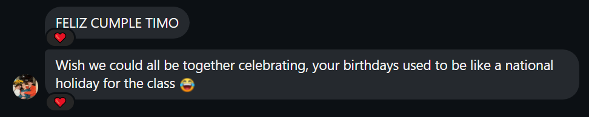
I used to celebrate my birthday with the whole class :D
But now all my friends are scattered to the winds, all across the world. And that is kind of sad. So while texting with Sebs, he had the idea to do a Zoom Call with the Table Tube Gang. And I've been planning that with the TTG, even Alex responded which is great.
I also spent some time responding and catching up with people that have been sending me stuff for my birthday. Among them, Micaaaaaa. That was cool. I also catched up with Alex, he is essentially fully recovered from his skiing incident, only a little more till he can fully play sports. These are great news. I also have some new say.html entries that I responded to. Overall this is shaping up to be a great time. Tomorrow with Raz, and on Sunday the Table Tube Gang will have it's first online meeting. So excited for that!!!!!!!!!!!!
We organised this pretty efficiently
Rating2.5/3
Post-Birthday stuff
Date:20/02/2026
Climate:Normal
Space:House
Time:Morning
I do some math. I also try to decide weather or not to go to the Italia or not. Here are the pros of going to the Italian
I get to see the cool people (Fer, Estuchi, Mica,... and that's all the people I'm interested in seeing
I rehash some organic chemistry knowledge
But the disadvantages are that
I can't study french, and I will never catch up with Sofe unless I do so
It'll be harder to study math
More expenses(Apartment, boat trips, and other expenses)
So overall the negatives outweight the positives and I'll probably not go. Truly unfortunate but I think it's true. I must sacrifice seeing my friends in order to study
The rest of this day was spent doing math. After math I went to UAS to play volleyball there and it was fun. Then I spoke Raz about some interesting stuff. We ate crepes together and he gifted me a game on steam called OneShot. I wish I could tell you more in detail of what we talked about but I genuinely don't remember because I was too tired. Literally on auto-pilot.
Later this day my mother tells me that she encountered Santino and Chiara on La Madriguera. And then I just happened to saw a video of someone doing some gestures that reminded me of Chiara, so I sent her that video and saying "This is literally you" and she replied with "Wow thank you timo!". Which I found somewhat sarcastic, and looking back a little the video was kinda poking fun at the gestures so now I feel bad :( idk if I should say sorry or just like play along saying "your welcome :D" or somethign.
I think I should say sorry just in case, I really didn't mean to insult her and that's what I think I did just now. I feel dumb, but I also must forgive myself because I am very feckin tired. So note to self, don't send messages when tired. Taking that note into consideration, I will sleep on it and think of a follow up tomorrow, it will probably be something a long the lines of "Sorry Chiara, I realize that video was kinda mean, I didn't mean to make fun of you, I just found it funny how you do those same gestures. How are you doing by the way?". That actually sounds very nice, it'll probably be that, but I will limit myself to sending it tomorrow just in case I'm delluded.
Rating
Table Tube Gang, ASSEMBLE!!!!
Date:22/02/2026
Climate:Clear
Space:My House
Time:14:15
So at 14:15 Fede and I join to the google meet. Fede says that everyone is late and starts saying that everyone needs to join now. If you don't know exactly what is happening, while talking to Sebs before my birthday, we came up with the idea to have a Google Meets call with the Table Tube Gang(TTG)/Mr Williams fan club, AKA the most powerful coterie in the multiverse of madness. In case you needed a recap, the Table Tube Gang currently consists of SIX members
Megan, the Adventurous Protagonist: Megan is the one who constantly does the craziest stuff. She has done drugs, she has climbed a bunch of places, and she enjoys doing donuts in her Manual Car. When it comes to adventuring, she is simply the best. She also constitutes the first half to the TTG's female population.
Alex, the Ocassional Participant: Alex VERY ocassionally pops in to check on the status of everyone in the TTG. He is actually a really smart individual who is studying industrial engineering in Toronto. He might self-depricate himself sometimes but he is indeed an incredible individual, the only bad part about him is how seldom he appears in my life.
Milla, the Chaotic Good: Milla has a kind of chaotic elusive personality to me, also fun and funny. This is mostly due to the fact that she is unusually secretive about a lot of stuff. No one knows what she might be up to, but we are all pretty sure that whatever she does is probably going to be a net good for society. She constitutes the other half of the TTG's female population.
Fede, the Fervent Worker: Fede is a man that seems to hate free time. He always fills his schedule with a lot of things to do, but the impressive thing is that despite how crammed his timetables appear to be, he always comes out on top!! He is an incredibly hard worker that somehow manages to always do his work on time.
Sebs, the Nonchalant Affluent: Sebs Typically has a non-chalant demeanor, he doesn't even care that much about being part of the Table Tube Gang. But unfortunately life won't let you live non-chalantly forever. Some times you are expected to care about things such as money and stuff. His current strategem revolves around sacrificing some years of being chalant, in order to get rich and live the rest of his life with low-chalantness. Not a care in the world.
Timo, the CapriciousAberrant: Hey that's me!!!! I do some pretty unusual stuff. This website is highly unusual for example. I do all of this mostly cause of the fun and whims :p not much else. At first I might seem weird, but with time, my friends tend to find my quirks somewhat charming :) sure, still weird, but it adds to my personality. You never know when some uniqueness will come in handy ;)
But the Table Tube Gang is such an ancient group that it has it's own history aswell. Here are some EX-Members of the Table Tube Gang
Josh, the Artist:Josh was a character in the Weird Era Adventure chapter of the Chronicle. He was a quirky fella that was really passionate about song making. He played the piano, the drums, but he specialised in his guitar skills. He is also really strong.
He suddenly left the UAS school, and the Table Tube Gang never contacted him again. The most current news we have from him are that he went to a Christian Mission in helsinki.
Raz, the Artist: Raz joined as a sort of replacement for Josh. Instead of focusing on the Auditive arts, he specialised more on the visual side. He likes swimming, anime, and drawing.
Due to a severe Political Misunderstanding, aswell as a certain long-standing rivalry with the Hard Worker, Raz decided to suddenly abjure the Table Tube Gang for good.
Due to the lack of full-time artists in the group. The art duties are now delegated to everyone equally. But specially upon Megan who is starting a buisness idea related to selling hoodies with original designs on them.
I bet you are so glad you got a recap of the current Table Tube Gang situation. Anyways, here is how the meeting went.
First, Fede and Megan joined in. It was really fun, Megan showed us her cat called Mayo :D and Fede insisted on calling her a "pussy" ever opportunity he got D:
Then Milla joined, she was in her room and her camera was strangely zoomed-in. She said that this usage of Google-Meets reminded her of the Quarintine times, which she didn't like.
Then Sebs joined, he was on a car for some reason. He insisted he was driving it even though that was clearly not the case.
Then Alex joined, he was muted and he couldn't figure out how to un-mute herself. He flipped the finger off at the computer, and agter that he managed to get it working.
Now I am going to tell you all the updated of that everyone has given me, starting with
Megan's recent Mug-Shot
Megan
Megan has had some interesting developments. She has gotten detained and now is waiting for a court date where she will probably get some amount of jail-time. The crime they are chasing her after is climbing the third tallest roller coaster in the world. Her maximum sentence is about three months of jail.
Megan spends most of the call showcasing her cat. But towards the end, she starts getting ready to go horseriding. She was driving while on the meeting, and she even starting strapping up the saddle for the horse. Eventually when she actually had to go horseriding, she left the meeting.
Alex
Alex said that these past few months have actually been quite boring, since he has been recovering himself from his injury. He is almost ready to do sports, and he can walk just fine now. He told a story of how a man approached him asking for his instagram and he said "I'm not gay" and the man said "Yeah neither am I, i'm asking for my friend over there" signaling to a girl. It's common in many American countries, specially the spanish-speaking ones, to do this. Alex then responded with what he should have said first, "Oh sorry, I have a girlfriend".
Alex spent most of his call just standing there and not doing anything interesting enouph to point out. Except when he showed us his cool balcony.
Milla
Milla told everyone about the Job he had at sweden and how she gets paid fairly well at it. From my understanding she also gets free food from it. Milla also told us about how she applied to several univrsities that she doesn't expect to get in to. She instead plans on taking some course to get her QUALIFICATIONS up to apply again next year.
Throughout the call, Milla did not do much, but at one time she got visited by whom I can only assume to be her neighbour or her friend. Then she returned to the call.
Fede
Fede was the more talkative of the bunch, insisting on people to tell some of their cool stories. Fede talks about his stories aswell. He tells me that the money he gets by working and studying at the same time is enouph to cover all of his tuition fees, which is really cool. Fede works at Doctors without Borders, and he is planning to get some internship there with something to do with Policy.
I have no idea why they didn't let him publish this Water-Boarding advertisement for a lesson
Fede is also the Education Director of his school, or something like that, basically he is in charge of planning out lessons among other things. But because he also kind of works at the school, he got involved in a sort of conflict. After the Death of Charlie Kirk, some groupchat started posting some concerning Arabic vocabulary in celebration of his demise. To make matters worst, this groupchat was leaked, endangering the PUBLIC SAFETY of students in UvA. Fede was put in charge of somewhat dealing with this PR disaster. He put out guidelines to prevent this event from happening again. The guidelines included a lesson on online/public safety and what should or should not really be said. They also made it so that all chats messages are deleted within a certain time-period. This was in my opinion the most interesting of his stories, but he also told me he seems to be avoiding the snow, since he hasn't done snowboarding. He has instead done sandboarding and wareboarding.
Sebs
Sebs decided not to tell anything to anyone. He just said he was there in peru, with his girlfriend and all. And then he took what we all assumed to be an Uber, and then he said something along the lines of "Okay, I gotta go eat" and bro left. He also promised me he would join the discord call today. For some context, the man made it his Birthday Present to join my discord server, something he has been reluctant to do for quite a while. However he still hasn't done it, and I will most certainly inform you once he does. This guy has a tendency to delay his promises
Timo
Finally the most important character out of the whole gang!!! So I hosted a Kahoot about myself. The questions were
What is my favourite colour, number, and animal
What country do I say I'm from
What isn't a nickname I like to be called (Beth, Sean, Clare, or Tim)
Which do I think is better, Breaing bad or Better call saul
The surprising winner of this whole thing was Milla?!?!? I was sort of expecting it to be either Fede or Sebs. Sebs has the advantage of having hanged out with me the most, while Fede had the advantage of having hanged out with me most recently. But Milla came in clutch by making an estimated guess on my favourite colour, guessing my favourite movie, and overall just being more right than the rest somehow. The most interesting questions I had was the movie one. The exact phrasing of the question was
What is my favourite movie (None of you should know this)
The "None of you should know this" is the only part of the question that gave people hints. You see, the options were
Iron Lung
Coherence
A man called Otto
Memento
All of these movies are movies that I like, and therefore I have told some of my friends about them. I have pestered Sebs to watch Coherence for a while now. I watched Iron Lung with Fede, and I also recommended Memento to Sebs and Fede. So statistically, they should know to discard Iron Lung and Coherence from the selection. If those were correct answers then the "none of you should know this" wouldn't make any sense.
Sebs actually had the highest chance of knowing this one. I have told him about the movies Coherence and Memento, and I have also posted on instagram about watching Iron Lung. So he had access to all of the selection of movies. Therefore he could have been able to discard all of the movies he knew about, in order to reach the conclusion that my favourite movie was A man called Otto, a movie I never told him about.
Instead, everyone but Milla got it wrong, I believe that Sebs fell for the trap of picking Coherence, Fede probably fell for Iron Lung, Megan idk, Alex also idk, and Milla guessed correctly. Sebs actually ended on fourth place, meaning he actually sucked ass.
Alex doesn't know how to unmute himself
So everything was really good and really cool. I loved hanging out with the Table Tube Gang, and we all agreed that we definately should do this again some other time. It was the most fun i've had in a while.
Sebs left and never came back and still hasn't accomplished his promise.
Also Megan is literally preparing for horse-riding as we were speaking which was kinda funny
Rating
Some sudden turns
Date:24/02/2026
Climate:Clear
Space:House
Time:Middle of the day
So I've been researching and I found out that the Uruguayan Palestinian ambassador Nadia Rasheed sent her daughter to Uruguayan American School a while ago. My mother was friend of this individual and apparently she was a really good person. The most interesting part of this whole thing is that the daughter of the Palestinian ambassador AKA Linda Rasheed is somewhat known by Sebs and I. A long time ago we said happy birthday to her just because of a random joke I did. That was such a funny coincidence. I found out about this because I began to get interested in Palestinian-Uruguayan relations after Raz and I walked across the Palestinian Embassy close to the sofitel. Turns out that Uruguay recognizes Palestine as a country. This is basically the most important requisite to becoming an official country, if you aren't recognized by Uruguay, I personally will never recognize your existance. Unless we are talking about Sealand, one of my ultimate goals is to get Uruguay to recognize Sealand so that it can become and official country.
I also bought these new pants yesterday which are feckin awesome, I showed them to the Table tube gang and they agree that they are awesome. Also Megan said she might be getting a studio apartment all for herself next year, which is sweet.I've also been thinking about everything Raz said last time we talked, well, obviously not everything. More specifically, he claimed that immigrants commit more crime per capita than normal US population. And I found this to be false. And this led me to wonder just how much of what Raz said to me was false, according to Fede, it was most of it. I just wonder where Raz gets his information from.
I've been thinking about Palestine and Israel more lately, and you know what that means, it means that my newest opinion piece is coming right up in a time near you!!!
I spent most of this day studying math, but I also spent a big portion of it studying the History of Israel, from the time that the Holly Land was established all up to the current day. I left off at the Origins of Hanuka where it was basically the greeks vs the Jews.
Rating
False decisions
Date:27/02/2026
Climate:
Space:Living Room
Time:Middle of the day
SO I've been debating about going to the Italian or not doing that. On one side, going to the Italian would be good because I get to hang out with Fernando, Estuchy and others.I also get to invite Mica to eat ice-cream again :D I still have that whole thing pending, I can't exactly figure out wheather she is shy or she is very respecfully and friendfully uninterested in me.
The major downside is money. And it's not even MY money, so like how am I supposed to judge that??? My father says that he is okay with paying it, but does that really give me all the authorization to just spend it as much as I want???? God only knows!!!
This is starting to feel like an Unspecified Direction kind of situation. Which is lame, if it was my decision I would just go, but my parents are making me doubt all of this. It's so annoying, perhaps I should just go full throttle with my instincts so that I can stop being so anxious about all of this. That was my plan initially, until my mother said something that made me feel guilty about using my father's money for something that isn't that worthy. I don't knowwwwwwwwwwww, the universe shall guide me. It'll be alright in the end because I can still go to the Neatherlands in the end.
New Updates
It turns out that I don't have a choice at all. I made it clear to my parents that my decision was set in stone, and if the decision was mine, then I would choose to go with my instincts. That is, I would choose to go to the Italian Hospital. But it turns out it was never my decision, I never had a decision, it was all but a mere fabrication, and illusion of choice. It makes sense because I'm not the one that has the money, duh.
So yeah, I can at least rest assured that I did everything in my power to go back to the Italian Hospital. It would seem that I need to try to meet up with Mica using other methods. My current plan is to travel some-day to Argentina with my father perhaps, and invite Mica to eat some Ice-Cream. If she says no on a weekend thennn I will 100% give up with this stuff, time to wait for another billion years till I see a girl as pretty as her. For a second I really did think I was going to be able to go to the Italian again, so it's really sad that this was the outcome. But I am known for looking at the positives
Now that I am not in the Italian, if I invite Mica it has absolutely nothing to do with anything academical, it's a more clear message that I want to be with her. That's really the only positive thing I can scrap out of this but yeah. Overall it was a pretty bad day because of these news but yea.
Rating1/5
Hate gettin anxious over these trivial problems.
I'm just imagining of how easy everything would be if I could just read minds, or at least just know wheather someone likes me or not. Not even romantically, just in general. It would be great, it would take out so much uncertainty out of my world. So much peace would be generated in my mind. Alas, I can not read minds :( I'm left with the unreliable source of my interpretations of what the actions of others could be.
Dani, Mono, and I talk
Date:28/02/2026
Climate:clear
Space:Room
Time:Night
So Dani, me, and Mono talk about a few things. We talk about Fede's and Sofe insistance on not hanging out with people that have different beliefs than them, and how that only increases the divide between the left and the right even more.
Raz is different because he is willing to hang out with people that have different beliefs than him. So in that regard I guess he is better. Dani and I also talk about Jeffrey Epstein. Jeff has been around the news all the time recently, which makes it surprising that Lucas hasn't heard of him at all.
We talk about the theory that Jeffrey Epstein was a Mossad asset/agent sent to the US to collect compromising information on several politicians(might or might not include Donald) in order to have leverage over them. This narrative offers a fitting, yet slightly scary explanation as to why the US insists on ihelping Israel in a variety of foreign affairs, including the Gaza war and most recently, the Iran war.
This theory is supported by Alleged ex-CIA agent John Kiriakou, who claims that it's very common for Israel to use these information-leveraging tactics against other countries. Worst part is that if this is true, Israel has essentially complete control over the US, so until we see the US refuse an order from the Israeli government, this theory will stand as a possible explanation.
We also talked about how the Epstein files had several examples of Jeff and other of his accomplices such as Bill Gates funelling money into partisan controversies such as Arabian migration and lgbtq rights, all to distract from the real problem. Rich people.
Truth is, weather or not it's Israel or any other organisation. The entirety of the US's government is involved in the Epstein files, and thus they seem to all be in control of whoever has the information. If it's Israel it explains why they help Israel so much, if it's anybody else, then I don't know what he or she might make the government do.
AlsoI tried to get Raz to join the call for like three hours but he just wouldn't reply until he went to bed. I've been trying to study some math with him to no avail.
Rating3/5
It was nice talking to Dani. He knows less than me in politics, so I can teach him all these theories and narratives and all. And I love how neutral he is. He just like me fr. I told him about how Capitalism and Communism both can work, but it depends on the people, and he agrees!!! Dani is a very underated individual.
Also, in case you don't know, I have a discord server, called The Bestest Place, I would describe it as the Potential most powerful Coalition in the World. There are some things stopping it from being the most powerful, but it has the potential in my opinion. If you want to join it, well why don't you just say so?
I AM TIRED
Date:02/03/2026
Climate:Clear
Space:Living Room
Time:16:13
Today I am feeling really tired and I can't deal with life. It's unfortunate but some days are just like this. Some days my body just decides to not sleep all night and just sleep on the day instead. But I've had it up to here with my body (imagine i'm making a gesture with my hand) I am not going to sleep. So I drank 2 cups of Coffee, a pill of Methylphenidate, and like 9 Mates. And like 8 hours later I'm still feeling the effects. I am fixing this damn sleep schedule one day or another, and if my body doesn't want to be tired by night, then too bad, because I AM NOT SLEEPING IN THE DAY ANYMORE!!!! NOT EVEN A TINY NAP!!!!! FUCK THE NIGHT OWL IN ME, IT CAN EAT SHIT AND DIE FOR ALL I CARE, BUT IT AIN'T GETTING NO MORE SLEEP.
Also I got my US-Visa stamped passport just in case I want to go to what appears to be the closest recreation of hell on earth humanity could do. No but in all seriousness i've been hearing bad thing after bad thing in the US. It's getting kind of tiresome. Last thing that actually shocked me was when Donald revoked the EPA finding that greenhouse gasses are bad for humans. WHAT DOES THAT EVEN MEAN?????? HOW DO YOU REVOKE A FINDING???? The only way you could revoke a finding is if you found another finding that contradicts it, but Donald didn't really bother giving us any scientific information that contradicts the very well known and established claim that greenhouse gasses have adverse effects on humans. But I trust that Donald guy... NOT.
I'm just glad that I'm in a country that doesn't have that much responsability for the world because I would probably be judging their every decision. I am really glad that I am 100% Uruguayan and this government barely ever does anything ever. Which is not the best but it's also not the worst :/ Many of my friends don't really like the Uruguayan president because he gives money to the poor and he raises taxes in doing so. I don't really know how true that is but my family is very good economically so I don't need to worry about it in the slightest. Come to think about it, I am very thankful for the life I've had, so many opportunities, and I've got absolutely 0 enemies so far. I wasn't into a persecutred minority, and I wasn't born into a poor economic status, seeing how the world is right now, I am so lucky. Thanksgiving came early this year I guess.
Like imagine I was born in Palestine, and then I got bombed, along with 66999 other people, I would hate that!!! But nah, instead im in the best country ever, just doing whatever I want. Dying of tiredness anxiety and depression :D I actually got diagnosed with Anxiety and Depression the other day, I don't know if I mentioned that but I took this test and the Anxiety metric was through the roof, check out this graph.
My test results
Letters
Meaning
Sincerity
It measures how often I appear to lie in the test
Validity
It measures how often I contradict myself
F.K
It measures how likely you are to exagerate their answers in the test
Hypochondriasis
Somatic preoccupations, always worried about what's wrong with your body
Depression
A lack of neurotransmissory such as Noradrenaline and Serotoning that might lead to dysfunction.
Tendency to be overly dramatic. Dramatic personality tendencies
Psychopathic Deviate
Presence of Psychopathic Tendencies
Masculinity/Femininity
Willingness or tendency to not conform to the gender roles of society
Paranoia
Tendency to be suspicious to their surroundings and be unusually perseptive of dangers.
Psychasthenia
Obssesive tendencies, OCD type symptoms
Schizoidism
Emotional detachment, limited desire for relationships, and indifference to social interactions, Alienation
Hypomania
Tendency to have a persistent and pervasive elevated or irritable mood (Bipolar Disorder type stuff)
Social intraversion
Tendency to be shy and socially withdrawn
Anxiety
Tendency to have a negative outlook on the future
So according to this Minnesota Multiphasic Personality Test the Psychiatrist concluded that the most concerning factors are the Depression and Anxiety. My Anxiety is so fucking high it couldn't even be measured, it litterally goes outside of the graph, it's more than a hundred. It's on a whole other strata of stress inducing reckoning.
Anxiety
I guess that has a little to do with how much I've been getting into politics. I can't see a solution to any of this, all groups hate each other so much, and upon seeing their history, there is no way to end it. It seems to me that the war will continue forever and that is hurting my guts so bad. So many innocent people with their whole lives ahead of them, eating breakfast and putting their footwear one feet at a time, just decimated because Politica leaders can't fucking talk in an era where communication is so abundant you probably couldn't NOT communicate with the rest of the world if you fuckin tried your hardest.
So ya, the Anxiety mostly stems from all the unnecesary yet apparently innevitable death of people in political conflicts
Depression
I don't really know where the depression comes from. Maybe it all started with my fucked sleep schedule which led to the lower production of neurotransmisors like Noradrenaline which then lead to more problems sleeping and so on. That is my hypothesis. If that's the case then once I fix my sleep schedule everything should be great.
Psychopathic Derivates
I can proudly establish that I most definately lack Psychopathic tendencies. I am actually below the normal population in Psychopathic Tendencies how about that. That is really epic. I am usually an optimist, therefore I have to make the concious effort to discover certain downsides with stuff. I have heard that in this world, it's typical for succesfull men to have psychopathic tendencies, since the ability to backstab other individuals for ones own profit is a trait that Capitalism unfortunately endorses. Therefore my chances of being a good CEO plummet. But I don't really mind
Paranoia
Everyone could be out to get me!!! I guess I do overthink a lot when it comes to... just about anything. So this trait makes sense because I am constantly always aware of my surroundings, which adds a little bit to my level of stress sometimes. I can definately see how the Crohn's disease manifested in me. It had enouph stress to power for like 3 lifetimes!!!
Schizoidism
So I do feel alienated and socially detatched from people on several occasions. But that's not because I want to, the typical schizoid personality disorder is usually accompanied by low levels of stress, suggesting that an individual likes being alone. I know for a fact i don't like being alone, I don't choose to be alone. If I am alone it's because I am too shy to ask my friends out or to meet new people. So yeah.
Masculinity and Femininity
I ALWAYS, thought gender roles where dumb. Ever since the very concept was introduced to me I started to question it. Because you know me, I am an incredibly contrarian person, I question everything. Ask my mother!!! I used to ask her just about every single question there was ever an answer for, and even questions there wasn't an answer for. I once unironically asked her for the meaning of life at some point. Safe to say my mother was constantly on the edge of succumbing to her irritation and defenestrating my child-self off the house. Luckily she never did.
OKay but back to the topic. My mother always used to say the traditional stuff like "Ladies first" and "Oh don't do that, that's for ladies" And I would literally always ask the classic questions like "Well what happens if we are being forced to walk into a volcano, would a lady be required to go first then????" And as I grew and got introduced to more specific gender roles, my hatred for the concept grew stronger, specially after finding out that on a societal level women are less accepted in work spaces because of the whole risk that they might get pregnant and stuff. Absolutely absurd. I also hate the Stereotypical Man figure that is presented in the phrase "Boys will be Boys".
First time I heard that "Boys will be Boys" I thought it was an obvious statement that meant nothing but Boys=Boys, same as the statement that 1=1. But apparently it means that boys are expected to act in certain controversial ways such as innapropiate behaviour towards women and being subject to occasional violent urges. This is so retarded that it's actually an insult to people with Mental Retardation to refer to this thinking as "Retarded". So instead I will just say that this construal was manifested by no-one with any modicum of intelligence in their mind. It must have been created by someone with such an evident lack of neurons in their brain that it borders on the non-existant
All that being said I am glad that I have an Aberrant characteristic in the gender role spectrum.
Rating2/4
Alex's Birthday
Date:08/03/2026
Climate:Clear
Space:House
Time:19:00
So thanks to a story posted by Carla Antonia Rivas on my Instagram feed, I found out that it's actually women's day. And I start to think about how awesome women are and how I would love to be one but unfortunately that will never happen :( So instead I started getting artistic, I thought about making a song, but instead I decided to make an instagram post that would show appreciation to my top three favourite women of all time.
Isabel Angélica Allende Llona, Catherine Bush, and Amalie Emmy Noether
I think I should have put the names of this women in the instagram post because not everyone might recognize them but too late, post's posted.
So if you'll excuse me, I will now just go through why I love these women so much. Firstly let's go with Isabelle Allende
Isabelle Allende
She was a writer and a poet who lived a very harsh life. Within her life was the "Golpe de Estado" of Chile and other political events. She also had to go through divorce and if I'm honest, this is the favourite woman I know least about. I just really like all her poetry but I can't say I know much about her personal life other than it was really harsh.My favourite poem she wrote is "Vida Garfio" which was such a great poem that I used it for my IB Spanish Oral and I got a 6. I also love other poems she made like Caronte and such. But also, a cool fact is that she wrote a book titled "Paula" and my mother loved the book so much that she named my sister after it!!! Allende also had a daughter named Paula whom unfortunately died at the young age of 28. But yeah, just a really cool individual overall
Kate Bush
I only recently became subjected to the amazingness of Bush's discography. She was hired early on by a talent-seeking agency that immediately recognized the musical and artistic talent in this girl. Thus paying for her entire education, and BOY did this move pay off. The first album was a hit, the second not so much because those bastards rushed her, but after that, in my opinion, every single piece of media this woman produced was nothing short of an absolute S-Rank infinite-tier BANGER. Just every song is so meaningfull, or whimsical, or fun, and most importantly, super good to listen to. OMG I just love everything she makes so much. You know, although I heard her song in Stranger Things first, I didn't really care that much, it was a good song but I thought nothing of it. It was only when I found a Vinyl disk in Punta del Este that had the album of "The Kick Inside" and that album was the GOAT. After that I just listened to everything she ever produced and immediately became my current favourite artist of all time. I am an absolute fanboy of Ms Bush
Emmy Noether
I know her mostly because of her workd in the conservation laws regarding relativity. Einstein simply couldn't exactly figure out how energy was conserved in a sistem with bent space time. She miraculously figured out an amazing fact through hard work and math. She discovered that translational symmetry is what causes conservation of momentum, rotational symmetry causes conservation of angular momentum, and time symmetry gives you conservation of energy!!! This were big revelations at the time, specially the last one. This is because on the long term, there is no time symmetry, and that explains one of the most unexplainable phenomena of all, the redshifting of light in space!!! Why does it lose energy??? where does the energy go???? Einstein could not figure it out, but Noether could, she simply figured that the energy is lost because of the lack of time symmetry. And if not lost, then it goes to the fabric of spacetime to keep it expanding or whatever. Truly genius stuff. She also made discoveries about local symmetries, and also discovering where energy goes in bent space time and such, proving that the Bianchi Identities were simply the best solution there was to get. She was second woman in Germany to get a doctorate, she managed to get a small salary for teaching at a university. Until the Nazis came and banned jews from teaching. But even still, she gave lectures in her Home Kitchen, and he would even teach Nazi Students because she would not discriminate at all. He would spread her knowledge and passion for science to anyone willing to uncover the truth, even if ideologically disaligned. When it comes to being a genius, she is simply the best there is!!!!
And those are my top three favourite women. This got me thinking about my top 3 favourite men. I guess I might make a post for them in mens day. But I don't really know when that is, so I probably won't :/ God I just love these women so much, for challenging the social norms and being so succesfull and stuff. And it just makes me so fucking angry women are still oppressed in today's society and basically coerced or insisted upon to just do household cleaning and whatnot. And they suffer from so much more than man, I know Im sounding really performative here. But women live life on Hard Mode, and some of them still manage to be so great, and that's why they are so awesome. And to some extent that's why I wish I was a woman, because it would be an extra challenge you know? Human's strive and they seek challenges to overcome, I guess it comes from my contrarian nature and my innate passion for just going against the norms. We are resiliency making machines, and when it comes to being resilient, women are just the best there is.
This also got me thinking about Megan, Milla, and Sofe. They the coolest women I know personally. I know Sofe will be incredibly succesfull, and Megan will live an absolutely radical life. And Milla might be the best enviormental scientist ever. They are so epic. But I should also not put myself down for being a man either, I'd say i'm just lucky to not have an extra challenge of being a woman. After all I am already cursed with Crohn's disease, ADHD, Depression, and Anxiety, so maybe I still have a challenging life. But yeah, Girls rule, but boys don't drool, I dont like that part of the saying :(
Rating4/5
Grl pwr
Also it's Alex's birthday jajajajja, I always found it kinda funny how his birthday is on women's day even though he isn't a woman jajajajja.
Also I really liked that I created that piece of art to showcase my appreciation for women. Even though I don't yet know how to draw, I am still capable of some pretty cool looking art I would say. but yeah.
Also, talking about how great women are, and how they are hated for no reason sometimes. I have finished a recent opinion piece about why Donald Trump sucks ass in my opinion, here it is
Canon Life
Date:09/03/2026
Climate:Clear
Space:Room
Time:Middle of the day
Upon reviewing my website, I just happen to realize that this is the Diary's official anniversary. WOOOOOOOOOOO, yipeeee. I made it a whole year. And now I think I am starting to be more and more productive with my time, maybe these meds are helping with my sleep and my overall efficiency.
Not much happened today though, today was actually a very bad example of how a good day would look. I didn't do anything :/ Fabri texted me a very funny meme, him and I have been texting ourselves some funny memes relating to the war in Iran. Pretty funny stuff
Memes fabri and I sent each other
On a more serious note I have been hearing some interesting stuff about Iran. Israel and the US claim that for what I think is the eleventh time, Iran is building a weapon of mass destruction (Nuke) and they have to stop them. The IAEA noticed that Iran was enriching a bunch of Uraniu, this was (according to Iran) a retalliatory action to the sanctions that the US had put on Iran, but it was only to show everyone that they have the ability to make Nukes, not necesairly the intention to. They said that if the US lifts the sanction, they will reverse this process and stop enriching so much Uranium.
But the US and Israel didn't take this threat of Iran having the capability of nuclear bombs lightly, so Israel sabotaged (bombed) the Natanz Uranium enrichment facility on April 2021. Iran also didn't take this threat lightly, so they enriched even more Uranium, up to 441kg of 60% Uranium. Not exactly weapon grade percentage but still a lot of fuel and it can be enriched further to make weapons. And that brings us to today where Israel and the US have just about had it with these Uranium enriching shennanigans.
In 2025 Israel responded in-media-Gaza-War to Iran by bombing a bunch of Uranium enrichment centers, aswell as a heavy water research reactor. The heavy water research reactor is only for research purposes so I don't know why they bombed that shi but that's besides the point. They mostly bombed enrichment centers.
Iran was getting kinda fucking tired of getting bombed. But they just continued their buisness as usual. Starting to rebuild some of the destroyed stuff. But as I said, Israel was getting absolutely pissed at Iran about all of these radioactive shennanigans.
I will do a little intermission to say that it's very hypocritical for Israel to be so worried about Iran having nukes when Israel themselves decided to secretely create an entire Nuclear Weaopns program and they didn't even sign the nuclear non-proliferation treaty and they refust to have actual investigation in their nuclear sites. I don't believe ANYONE, should have nukes, and I think that this bullshit that Iran is doing is so fuckin dumb. To threaten people to build a bomb, like dude what the fuck do you expect??????? Still this anger coming from Israel is equally as Retarded as Iran enriching Uranium as a threat. Working with Nuclear Energy for any purpose other than to generate electricity for civilians is Retarded. And I'm obviously not referring to people with mental disabilities, those kids aren't retarded, these people are retarded, the ones that mis-use the power that oppenheimer discovered.
So then the US and Israel join forces to make sure they remain one of the only countries to have Nukes. They threaten Iran and idk exactly what they were demanding from them. Maybe they were demanding for Iran to give all the enriched Uranium, and Iran probably said no. Iran also said that they wouldn't be the ones to strike first. They in fact did not strike first
It was actually Israel and the US who struck first. They claim to have launched some "pre-emptive attacks" in belief that Iran was planning to strike first. Their sources for this are Israeli intelligence information or whatever. And so that's the meat of the conflict right now. Basically Iran was acting stupid with the most powerful fuel source that this planet has to offer, and two very powerful countries didn't want a country to play with this powerful fuel source, using it as leverage and whatnot, so they decided to bomb it. And now there is was. This is so fuckin stupid, every country is so stupid, every country in this war is so stupid, except Palestine, specifically the west bank, obviously not Hamas... duh, they are probabily the stupidest of them all. But not really, it's really hard to match the stupidity of Iran, Israel, and the US all combined. It's as if all of these countries actually wanted to go to war despite them constantly claiming that's exactly what they are avoiding.
Also the Iranian leader is dead. And new news today
Breaking News
Apparently Israel decided to bomb 4 oil deposits and a petroleum logistics site around Tehran. In case you don't know, oil burns, so now a thick smog is covering a whole bunch of Iran. This will most likely cause a whole bunch of pneumal issues to the population of Iran, because no matter what Donald's administration says, greenhouse gasses are in fact hazardous to humans. This will also not help in our current fight against climate change. And this all happened yesterday of all days!!!! In women's day!!!! I just can't believe it, the STUPIDITY-METER has just gone up by an approximate amount of A FUCK TON. I am actually going to start measuring this shit, you think I won't?
RatingIdk/10
From now on, I am going to measure the political stupidity of the current events that I hear on this little vial over here. Each time I hear something stupid, I am going to add to the percentage of stupidity filled. We will start at 0% because if we had to count every fucking imbecilic event that happened ever since october seventh we'd be fuckin drowning in the stupid-sauce or whatever this vial is supposed to be filled with.
Litro'Vial:
I was going to call this the "Retard'o Vial" but that didn't make much sense. However, I will use this opportunity to do something
To take a stance. A stance on slurs, more specifically the word "Retarded". Intellectually disabled people in the past were referred to with the term "Mental Retardation". But that term wasn't very helpful since it was only purely descriptive of someone who by the societal standards of the time, was seen as less efficient or wrong in a way. Therefore the word "Retarded" was not only used in medical contexts to basically say "Your child has no hope in this world" but it was also used as an insult to people who acted in a way that they viewed as "wrong".
But now the term "Mental Retardation" got fuckin discombobulated out of the medical realm, by which I mean, it doesn't exist anymore. Therefore, there is no longer anyone in the world who is officially retarded (unless they kept a diagnosis for mental retardation from 15 years ago). They can have Autism, ADHD, Dyslexia, you name it, but they aren't retarded. However the word has persisted through it's vanishment from the medical realm, in the form of an insult. For a small while it was used to still refer to intellectually disabled people, but as it became clear that these people can still be capable of great things, people started to use it basically as a synonym for dumb.
This is where we are at right now, the word "Retarded" is a synonym for "Dumb" or "a delayed way of thinking" as I like to put it. When I say "damn, this war sure is retarded" I am obviously not saying that the war is intellectualy disabled, neither am I implicitly suggesting that wars are caused by intellectualy disabled people, or that they are comparable to intellectual disability at all. I am saying they are senseless or stupid. This is actually very similar to the words "Moron", "Imbecile", and "Inept" which all used to be medical terms to describe low IQ people, just like "Mental Retardation". However with time, all of these words just became normal insults and ways of just referring to inneficient or wrong processes. I believe that the word "Retarded" is on it's way to becoming just another normal insultive word, a synonym for dumb, moronic, or imbecilic. It's just that some people are still touchy about the word, because only recently 15 years ago did the term "Mental Retardation" get changed to "Intellectual Disability" but I am sure that in some years, the word will get neutered out of all of it's slurish, discriminant meaning, and it will just be another insult.
So I decided to step ahead of the curve and start using the word "Retarded" as a normal insult, because I just happen to really like how the word sounds, and how it's actually a synonym for delayed. That's actually another point, retarded means delayed, before all this medical nonsense got coined. You can still see it in several academic topics such as the topic of Retarded Potentials in physics, which describes electromagnetid fields, or a retard in music which means to slow down the tempo, or a flame retardant. What I am getting at is that we can't really treat this word as that much of an insult because actually retarded people don't really exist anymore, and furthermore, the word has an actual meaning that is used, or used to be used, in several ways. It's not like the N-word which was created explicitly to refer what the people at the time believed to be a lower race of human beings.
My next point is about slurs in general. The word "Guy" originated from Guy Fawkes, he was a man that tried to blow up the British Parliament, and thus he was seen as a bad figure(I promise I am getting somewhere with this). So then the word "Guy" became basically an insult that was meant to comparing some individual to Guy fawkes. But as time went on, it was used so often that it lost it's insultivity attribute, and thus guy became just a word for any male human, and eventually, any human.
My point with this, is that by letting an insultive word be used as an insult, it will eventually lose it's insultivity value, and thus it won't be capable of hurting anyone anymore. This is was is pseudo-happening with the N-Word, and how black people use to refer to themselves. However by not allowing anyone else to use it either, the word still carries some insultivity to it, and thus it can still be used to insult others. My main point with this is that by restricting people from using a certain insultive word, we are preventing the insultivity value of such a word from decreasing, and thus it will remain a slur, and a weapon, for racist people to use, forever. Therefore, we just shouldn't limit anyone's freedom of speech, if they want to be insultive, they can, they'll be hated for it anyway. Eventually black people won't even be bothered by people calling them the N-word, hell, it might even become a synonym for "guy" if we stopped caring about it so much.
My last point is that I am actually technically intellectually disabled. Which is to say I have ADHD and Autism. Therefore if nothing I said previously made any sense, I can reclaim the word "Retard" just like black people reclaim the N-word, and I am allowed to use it how I please :p
And with all that said, the vial's name is officially the Retard'o Vial, and the liquid within it, is the retard'o fluid. And it has absolutely NOTHING, NOTHING, NOT A THING, NOT A SMIDGET, OR AN IOTA, to do with intellectualy disabled people. It's just dumb
I had a dream today
Date:10/03/2026
Climate:Clear
But today nothing really happened so all of that was irrelevant.
Space:Bed
Time:Unkown
Timo is in bed, sleeping. But he isn't in prospit or on derse. He is actually dreaming like a normal human being.
The dream begins with me scavenging some field full of grass and trees for some materials. But it's weird because there are materials in places that shouldn't contain these materials. For example I use a disintegrator to disintegrate a tree which for some reason has diamonds inside it??? And a lot of stuff like that occurs. So I go back to my home and I deposit all my findings, and this is where I get a little introduction and world.
Apparently we are preparing for something. There have been some space-time anomalies that have been transporting some not-so-friendly entities into our planet. These very same space-time anomalies have also been transporting some not-so-usual things from other dimensions such as trees that grow diamonds inside them. But according to the scientists, this whole spacetime bendy thing is eventually going to result in the end of the world, this is not an unusual trope for my dreams to have. So apparently we are gathering materials for the end of the world or something.
I go onto another expedition but something goes awry this time, a bunch of other people appear, and I try to fight them off but they capture us all. And the dream sequence kind of cuts there because they knocked us out, and suddenly I'm in my room on a computer playing a game about foraging and talking to Ethan about it. We are talking about the mechanics and how there are safe-zones in the loops and whatnot... wait isn't this similar to what I was just experiencing?
Then I start experiencing it again. But this time I appear to be in an unkown room with a bed. It appears I am in the lair of the bad guys that captured us. I have either been imprisioned, incorporated, or I have switched perspectives with someone else. My guess is I have somehow been incorporated into this place because I am free to roam around and do whatever I want. There are television screens in the common room that look out to the outside world. The End Time are here. Monsters are everywhere, there are zombies, slimes, dragons, you name it. But suddenly the screens shut down, and when I ask the bartender what happened, he says that the bubble is looping... ?what
And then an alarm goes off and I am told to go to some place. Now, this is where events start to get off extremely strange, because it appears that I am in a society that is constantly in the edge of apocalypse, let me explain.
Explanation:
After being captured by this "Colony" of bad guys the apocalypse started happening. Many space-time ruptures started appearing, many monsters started monstering around, but among all of these weird space-time bendy anomalies, something else happened. The creation of loop-bubbles. There are areas of SPACE that behave just like any other area of SPACE, except that within a specific interval of TIME, they randomly LOOP back. An example is, if a loop-interval is like 12 hours, then anyone in the bubble will be sent back 12 hours in time, every 12 hours. So a bunch of people established a colony inside a loop bubble to prevent themselves from reaching the prophesied end of the world. We are basically living in the edge of apocalypse every day, but just as the apocalypse begins, the loopbubble loops.
That's all cool and all, but like, there aren't enouph resources inside this loop bubble for all of us. So every day we must still go out to forage resources. The resources are always located at the same spots, but the monsters aren't constant. Their "spawn locations" are always unpredictable for some reason, and so are certain spacetime anomalies. However the colony refuses to accpet this, and it insists that the colony's loop-bubble is stable and will remain perfectly stable forever.
However, the monsters, even though we are in a Loop Bubble, they are still increasing in quantity with every loop. Thus we need more soldiers/foragers to go get food. And thus we go back to where I was being taken to a strange room and some really odd things started to happen. Please take into consideration that all the exposition I just dropped was completely unkown to me, and was only revealed to me after this whole innapropiate series of events happened to me.
So we go to this room and they tell us to take our clothes off and deposit them on a sort of bin. We go to the next room, and it's a big room full of mattresses with numbers on them, and they tell us to go to our respective mattress, but idk which one is mine, so I just go to the last one hoping no one goes there. The mattress did belong to a couple but they didn't mind me being there, it must have been some sort of confusion since apparently this room is never supposed to have an odd number of people. Every mattress is supposed to have exactly two people in fact, and then, everyone starts fucking. Like having sex and all, and I am asbolutely just... absolutely flummoxed by the series of events that has just transpired. I know for a fact that I definately don't belong in whatever place I just woke up on, but I really can't leave either unless I want to be subject to the fuckin APOCALYPSE, yet it seems that staying here means I will have to be subject to the FUCKING apocalypse.
Jokes aside, I'm not doing any of the fucking, so at least it's not that bad, until a girl that apparently finished her "session" early offered to "have her way with me". Before I could respond, the man says "no, no worries, I'll do it". I... what?? I'm not a girl???? But upon looking down on my birthday suit, it seems that all along I really was a girl. How ignorant of me to assume... my gender???????So I feel like I have to fit in, otherwise they might figure out that I am an impostor and kick me out. I refuse to describe the series of events that unfold after that interaction.
So after we are "done" I notice a vending machine that was dispensing some free bars that said "Butt expanders" and "Dick enlargers". I wouldn't eat any of these ever in my fukcin life. So after a few other events I refuse to describe in detail, I find myself in some sort of SAUNA with a window to the outside. I am with a new group of friends still naked because I haven't gotten any new clothes yet. I ask them about this world, and they proceed to tell me all the exposition that I previously gave you. And they explained that's why they had these breeding sessions, because they are in constant need of new soldiers and stuff. This is all so wild to me. Eventually I do actually get my clothes back and we all go on an expedition to get supplies. We gather stuff, and fight some monsters, I personally don't do any of the fighting thoguh, I just got really lucky I guess. But after gathering some supplies, I decide to go somewhere else. According to the rest of my team, the colony's loop-bubble is about to close, if you are outside the loop bubble once it loops, you are out forever. But I don't listen because I apparently know about another loop-bubble where my family lives. It turns out that I know this pre-determined risky path to my family's loop bubble. The loop-interval of my family's loop bubble goes a little bit beyond the loop interval of the colony, therefore I can use it to get back to the colony. However the pre-determined path involves using this elevator-shaped-gondola in order to jump into one of the window-doors of the apartment. The gondol breas and it's now hanging off only one cable, so it's dangling and we are really high right now.
I can't jump towards the building while the door is closed because I don't think I'll be able to open it mid-air and enter before I fall to my death. So I instead decide using my META TACTICS. I know im in a dream right now. Unlike very avid lucid dreamers, my lucid dreaming skills are shit. Every time I have dreamt-lucidly, I have never been able to control my dreams, or at least not to the extent people claim you should be able to control your dreams. However this time I really try my hardest to use my lucid dreaming powers to open the door so I could jump, and suddenly a gust of wind opens the door. Just what I needed
I enter the building, supply my family, defeat a monster, the family loop does it's thing, I go back to the colony, and about there, the dream ends.
Rating3/3.5
One of my coolest dreams/weirdest dreams
Title
Date:12/03/2026
Climate:Clear
Space:House
Time:Night
Me an mono go into a call and we talk about some stuff. We also continue our ANIMAL TIER LIST which will be published into this website as soon as we are finished. This ANIMAL TIER LIST is on of the best projects Lucas and I have ever embarked on and I am so excited to see what the END PRODUCT will be. On other news, Raz has been very occupied with work from his university, and therefore I haven't been able to spend time on call with him in the slightest. I can usually talk with Mono during his walks from his apartment to the university. I also talk with Mono while he copies formulas from the pdfs that I make with him.
News
In a new news segment, ima start keeping track of some of those nice POLITICS. Historians of the future are going to love these accounts. These are just the news that BIG MEDIA decides to feed me every day. It keeps me informed of some of the most HORRIFIC ATROCITIES that are being committed at the moment. Specially in the middle east
Charges on Israeli rapists dropped!!!
In a July 5 2024 Five undisclosed Israeli sodliers were caught on CCTV at the Sde Teiman military prison abusing a Palestinian Prisioner. Medical resports found severe lacerations around the anus, suggesting possible anal penetration through the use of a sharp object.
The five accused Israeli soldiers were subjected to a polygraph examination that suggested they were lying when they answered the question "Did you insert an object into the Palestinian's anus during a search?"
Polygraph Examination:+5%
"Lie detectors" are unfortunately really bad in legal contexts. A very nerveous innocent person could show up as lying while a calm murderous sociopath could show up as telling the truth. The American Psychological Association has stated there is no evidence that any pattern of physiological responses is unique to deception and thus the fact that these are used in a legal setting at all adds juice to the vial
Suspicious activity published by Channel 12
Medical reports cited in the case overall show severe rectal injuries which required surgery, a ruptured bowel, a punctured lung, and fractured ribs. Later that same July, the 5 Israeli soldiers were arrested and an investigation was pursued by the Military Police
On August 2025, Channel 12 published some leaked CCTV footage that showed what seemed to be some 9 Israeli soldiers ganging up on one dude while they used their shields to cover up whatever they were doing. The footage was leaked by the Military Advocate General Yifat Tomer-Yerushalmi whom was later placed under house arrest for being suspected of leaking Israeli state secrets. She was the one who also filed the indictment
Around this time, one of the five suspects revealed his identity to be Meir Ben-Shitrit, he called for the firing of Military Advocate General Ms Tomer-Yerushalmi. Then the Defense Minister Israel Katz anounced he would try to fire her, even though he kinda lacked the authority to do so. But a bit later Ms Tomer-Yerushalmi abdicated her position anyways. Israel Katz then replaced her with Itai Ofir who ordered the cancellation of the indictment against the five soldiers on March 12, 2026(TODAY), all the charges were dropped and they are now free of any consqeuences. This decision was supported by Israeli President Benjamin, and obviously by Israel Katz.
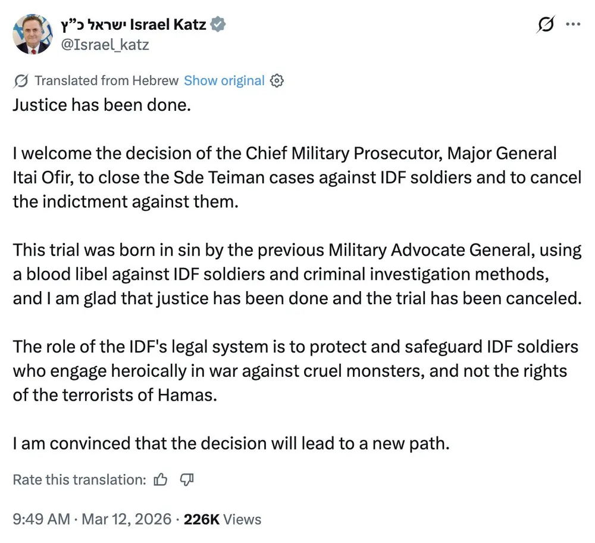
A tweet that is totally not against basic universal human rights
Litro'Vial:
Title
Date:22/03/2026
Climate:Dream
Space:Dream Bubble
Time:The present
I just had what I call my most heroic/fucked up dream ever. And I mean it so fuckin much it is unbelievable.
So, it all started with me, in my bed. I was on my computer in my bed, as I usually am, trying to fall asleep while hearing some youtube video. Something I know I shouldn't do but whatever. And then my mother bursts into the room and she scolds me for using my computer while I'm supposed to be sleeping. So after that the rest of the night is some five-nights-at-freddy's type of night-life where I am constantly checking up on my mom to see if she is about to open the door, and pretending to be asleep when she does, and muting my sister's phone calls. But at some point I get a call from someone, and all my memory about the call and who the caller was is completely gone. All I know is that when my mother asked me who I was talking to I said "My sister" and my mother said "You liar, you always lie, why are you lying to me?" but the exchange was all in spanish obviously.
Then I woke up. I woke up with my computer playing some random video from MOIST-CRITICAL, I go downstairs to drink NORADRENALINE-BOOSTERS (depression meds) but I remember that I have none, however, something is wrong. For some reason, it would seem I actually do suddenly have them in my hand. This is impossible because yesterday I remember checking and I in-fact did not have any of my depression meds left. Thus I concluded I was in a dream, so I did what any sane person would do. I used my incredibly high Intelligence-Attribute to deduce that since I have no pills in real life, I should take way more pills in this dream. This is because obviously dream pills are less efficacious as an effect of being in a dream, but if I take more than I would in real life(like approximately 4 times the amount according to my calcs[Calc is short for calculations]) then it should have the same effect on me when I wake up. So I do that, using my LUCID-DREAMING-POWERS I conjure 8 pills and I drink that shit up.
Then I wake up, again, but this time I am not me. I am a frog, travelling in half an eggshell across the sea. Eventually I arrive to Uruguay where I try to come back home to my owner. My owner was the young daughter of a classic middle-class family that was overall pretty happy in what I would call an Alternate-Universe-Montevideo where there is more grass and more parks than usual. And the cassino isn't there for some reason(The Sofitel) It's a long an treacherous climb, but that's what you signed up for when you decided to live in this rouph and tumble world. I tried the window but they were locked, I tried the chimney but I concluded the soot would further shorten my already pretty short lifespan. I even tried to approach my owner's parents. But nice as they may be, they didn't recognize me as my owners previous pet, before she threw me into the ocean. Suddenly a second frog approaches me, one who seems to be female and wearing a Japanese Kimono, she arrived in the sea on an eggshell just like me and she asks "Are these the Oriental Lands". It's a complex question because both Uruguay and Japan can be referred to as such. She further specifies asking "Am I in Uruguay" and I say "Oh yea". She then teaches me some ninja skills which I use to sneak past the door once the parents open it. I head to my owner's room. She isn't there yet, but no matter, I'll wait
And she never arrived
Then I wake up again. This time I am not me, instead I am this fat man who just woke up. I can just tell that he is a reddit user, perhaps even one of the afeard reddit mods. I know this not only based on his large wideness-attribute but also because of his actions. The first thing he does upon waking up is go to his computer and go through reddit. I don't know what he is doing there, probably arguing with highly intellectual beings beyond our comprehension. Then he goes on about his day, and in his house there are 5 people, I know this because he shouts "Where are you 5??" And 4 figures appear, a daughter, a son, a woman, a man, but the last one doesn't show up, the Reddit Moderator says "She'll give up eventually". The first three appear to be worried but kind of already used to whatever is about to happen. The last one, the man, seems to be new to the situation, and he is freakin the fuck out. Apparently this Reddit Moderator has been endowed with special capabilities, the capability of being able to control someone's mind/body against their will. Although judging by the absence of THE FIFTH BEING, it would seem that one is capable of resisting such control through some unkown method. The Dream suddenly cuts to a series flashbacks from these four victims and their experiences with the redditor. It is through these flashbacks that we will be capable of figuring out more about the redditor's intentions and some details about his powers. The Reddit-Moderator will hereinafter be referref to as R-M
Imagine this is the R-M from now on.
We start first with the man. We don't actually get to see his first encounter, we just get a full explanation of his R-M's powers. Basically, if he has triggered his control, bro is capable of controlling your MUSCULAR TISSUE. This is reaaaaaaaaaaaaaally not good because that shit is basically responsible for literally all of your movement, and your digestion, and also your bloodflow. Meaning this guy can straight up murder you via cardiac-muscular-tissue-halting. Which would suck ass. Furthermore, the Man is currently Naked in this guy's house, which gives us a hint as to what he does with his victims. It would seem to be perverted things, this R-M has just climbed the ranks of evilness to the supervillanous very quickly.
The second victim we get a perspective from is the Woman, the woman actually happens to be famous argentinian actress Anya-Taylor Joy. Her name is never explicitly said so I don't know if this is actually her or an extreme look alike. But apparently she was walking upon the streets of Alternate-Universe-Rambla, when suddenly this mthr fucking freak that we call R-M grasps her hand. A symbol of a heart appears, not a love heart, but an actual human heart pulsating and stuff. Suddenly the woman is paralysed. The audience is shocked in horror upon the realisation that all R-M needs to trigger his control is nothing but simple skin-to-skin contact. R-M and the woman then enter this man's home. And the woman is rightfully terrified at this point. The next day the woman is forced to walk outside into the front-lawn naked as the R-M lauphs
From afar, the camera zooms out. It seems that a Detective-Figure has been overseeing these events through the implementation of some cameras in the front-lawn, but also inside R-M's house. However the cameras inside where de-activated. Although there is not enouph evidence to start a case, this detective begins to rush. He is to distraught to see what could possibly be an awakening of someone's inner powers used for such deprave purposes. He needs to put an end to this NOW!!!
Our next victim is a young son/boy. The dream starts with the boy already in the R-M's control. He asks the R-M if he could go to a store next to his house old house in order to buy exactly 156 rolls of toilet paper. You may be wondering, why 156??? How would such a tiny boy even carry 156 rolls of toilet paper. I have no idea, I am not that boy, I am just an outside spectator who has occasional access to information regarding the boy's actions and some thoughts. The R-M says "Sure, that seems like a reasonable amount of Toilet Paper to buy". The boy gets his hopes up and thinks to himself "YESS!!! This is my chance!! I can get close to my house, and quickly tell my parents to save me!!". The boy goes out and leaves a trail of toilet paper strips, I don't know why he did that. But he came upon a fork in the road, a bifurcation if you will. One path lead to his home, the other to his store. He had to be quick about this. The boy ran to his home but almost instantly upon doing so, his body freezed. He started automatically walking back to the R-M's home against his will, picking up all the toilet paper strips he had left on the way. The flashback cuts to The R-M with The Boy in the car. The R-M is driving the boy somewhere.
From afar... except not so far, he is very near. The detective observs how R-M and his young boy are in the car. It is now a good time to reveal a pretty shitty plot twist, I AM THE DETECTIVE!!!! Or so I think, everything this man thinks is like available to me and he just acts in the ways I would act if I was him, which I actually felt as if I was. I didn't feel like I was watching someone else from their perspective, I felt like I had more free-will per-se. Anyways, I stop R-M claiming he broke the law by stopping on a roundabout when he clearly had the Right-of-Way. Bro is rightly pissed at me, but this is nothing but a ploy. My agents immediately fill the area with cones, now the car can't get through. R-M is confused and he starts removing and knocking the cones over, but I just follow him and place them right back up. The scene is hilarious to me and I start lauphing. The reddit mod looks at me angirly. I order the boy, to get out of the car and quickly tell me his real name before R-M can exert his control. He says "Ryan Robinson"... to you(the reader reading this) this may mean nothing, but to the detective(AKA:me) who has access to everyone's databases, I know this is the missing boy of the robinson family. However he was previously rocking some brown hair according to the data files, and now he is blonde. This means the reddit moderator must have used some sort of hair-colour-modifier to obscure the boy's appreance. Clever, but not clever enouph to stop the Detective's witts. The boy is saved.
The final memory/flashback I gain access to is that of the daughter. We actually get to see that the daughter is indeed the original owner of the frog in the eggshell, in case that wasn't obvious. We also get to see that once she was caught, the detective tried saving her, but she refused to be saved, for the R-M had threatened to harm her family if she were to escape. But the daughter gave us one last detail, R-M seems to have complete control over his own muscles aswell. She said that R-M has two coins under his eyelashes, and he uses his eyelash-muscles to chew on them with his eyes closed.... I am sure this is supposed to be some metaphor for R-M being blinded by greed or something. But it was also deeply unsettling to the detective, I somehow seemed to know there was no hope of me in the form of the detective to stop his harm. And thus I lost hope.
And then, I. Wake. Up. At crepes, idk why I was sleeping at crepes okay!!! I just was, on the table hunched over, and dreamin about all this bullshit. But suddenly I get a vision!!! EVEN MORE INFORMATION?!?!?! The fifth member that had some capability to resist the Reddit Moderator's control, was none other than my friend Nata. Nata is one of my friends, that's just about as much as you need to know. Shit, just, got, personal. I immediately leave Crepes, and walk towards what I remember to be the house where the R-M lives. But there appears to be a massive building here instead. The initial floor of the building still has the aesthetics of the old house, it has a slanted roof with brick roof tiles and a bunch of bushes in the front lawn, but now the house is as tall as a building with multiple floors!!. I enter the building and I go to the elevator, but I don't even know the floor he lives in. "WAIT!!!" I say to myself, I remember that Ryan Robinson wanted to buy 156 toilet papers, could that be the number of the correct door??? I go to floor one and go to the door with the number 156 and sure enouph, the R-M opens the door saying "I've been expecting you"
*MASSIVE GULP* but I play it friendly and professional. "Oh thanks Mr" I respond, and he proceeds to say "Come in, through here" I enter his apartment, which seems to further divide into a bunch of doors before I get to the lving room. I am extremely careful not to make any skin-to-skin contact with the R-M, but he doesn't seem interested in gaining control over me. So far it's been suspiciously easy to enter his lair, he seems to think I am some sort of individual that is interested to do some buisness with him. I follow him to the living room where there are two windows. However in my eyes, all I see are two fenestrated escape routes. But after analysing the area for safety, my eyes set on the R-M's two "Daughters" one of them seems to be the owner of the frog in the eggshell, but she ain't no girl no more, she's all grown up and has reached TEEN-STATUS (my age[like 20 years]) and I also see Nata. But of course, I gotta play it cool, I don't know these people, I'm just walking here, on a random powerful muscle-controlling pervert's abode. I say hi to Nata who obviously knows who I am but is also smart enouph not to let the R-M know about that. I ask for her name, she stutters for a second before saying sort of embarassingly
"I am Aster Avenger" just as I expected. The R-M has decided to change their names, albeit into obviously made up names. The Daughter is called "Emily Noether" Like the very well known scientist who discovered the relationships between the symmetries of the universe and the conservation laws of the universe, I know this because I am the detective. So we start talking about Avengers movies and also a little bit of science and all and the R-M seems confused, yet intrigued, and kind of suspicious of my presence. Then I finally put my plan into motion and thinking. I could establish "Aster" as one of my new friends, and therefore we can hang out at crepes tomorrow to properly discuss a plan. After all I don't think I can do anything usefull to free Nata and Emily. Hand to hand comebat would prove difficult given that I have to avoid skin-to-skin contact, and I happen to have a severe lack of contactless weaponry on me. Best I'd be able to pull of is fighting through the use of pure kicks, but I don't think that would work out. I'm not as talented as L from Death Note in kicking as a form of combat. So we make a plan to hang out tomorrow at crepes, Nata, Emily, and I may be capable of discussing a plan there and bring an end to this bullshit. Nata kind of desperately says "Oh we can probably hang out every day since we have nothing to do", I quickly agree, since I seem to be in a similar situation where I have absolutely nothing to do every single day.
The reddit moderator turns on the TV and explains that things are not going well economically, the SAI is going down and the overall interest rates of the US are below average and idk fuckin economics I have no idea what the fuck he is talking about but it's basically some completely bullshit excuse to say we are only allowed to hang out one time tomorrow. So we gotta make it count. The R-M is already suspicious of me as he seems to know that I intend of doing absolutely no buisness with him and I just walked into his house for apparently now reason. But then I suddenly get assailed by a ludicrously colossal mass of mental retardation and before leaving I say "Great, so tomorrow, you, me, and Nata at crepes, I'll see myself out" my heart sinks upon realising I literally said Nata's real name outloud. Nata has a shocked expression, and the R-M lauphs, saying
"Ha, ha, ha, you see... the name Nata wasn-" I give the R-M no time to do his dumb evil monologue. My cover has so clearly been busted it's not even remotely funny. Okay in hindsight it's fucking hilariously dumb, but at the moment it wasn't. I decide to perform JUMP-KICK, not towards the R-M, but towards the window ahead of me. But my hopes are completely shattered, much unlike the reinforced glass I just completely failed to shatter. The R-M lauphs again saying "Ha ha ha, what exactly are you doing my boy. "I ummmmmmmmmm" DAMN IT!!!!!!!!!!! HE GOT ME!!!!!!!!! He reaches over with his hand, but I quickly realise that the second window is unlocked, so instead of kicking it I just open it planning to perform a Self-Defenestration maneuver in which I would proceed to slide down the slanted roof and land on the bushes. But... the Redditor, he lauphs again...
"Oh my, I hope you don't mind the razor blades in the tiles of those roofs your sliding on" DAMN IT!!!!!! I think to myself as my skin gets shredded by the razor blades, but I'm far from dead, it'll take a lot more than that to kill me. So I jump to the safety of the bushes in the front lawn. But......... THE MOTHER FUCKER LAUPHS AGAIN!!!!!
"Oh boy... did I put knives on those bushes???" the R-M says sarcastically. I plummet into the bushes, falling victim to several stab wounds including a massive knife on my chest. This guy predicted my every move, he read me like a fucking obnoxiously long mysoginistic reddit post!!!. But my Adrenaline is high and I feel no pain, I must get back to my parents and inform them. I gotta climb the fence and... oh no. My body, even though I feel no pain, I just can't seem to move it properly. I see, the knives and razor blades have severely damaged the tendons and muscles of my legs. I can only use my hands to move around. The Redditor does not lauph this time, I was supposed to be dead, he shouts "OH NO YOU FUCKING DON'T!!!!" He is mad this time, so I know I am doing something right. "YOU ARE DEAD!!" He is most definately coming at me at a rapid pace, while I am slwoly dragging myself back to crepes in hopes of getting someone's attention. I feel dizzy, I am bleeding everywhere. I see a frog, the frog reminds me that hope is the last thing lost, I just can't stop thinking of the litrocity of all this mthrdfeckingbllshit!!!! but the frog assures me that hope is the most powerful thing of all. It's my secret weapon inside of me, my ultimate hope
My secret weapon inside, my secret weapon, inside, of me. The redditor approaches me, he bends down and turns over my almost-lifeless body, touching me and inducing his control over me in the process. He starts lauphing again, that annoying ass lauph, I feel his control over me, it's hopeless, desperation consumes me.
But no, clearly this isn't the end, I have one more thing to show, one last card to play. The secret weapon inside of me. The fact that The R-M's control could be resisted by Nata to some extent for all that time, if I can just use it, my weapon, for only a second. That would be enouph. With my ability to create naïve hope out of fucking nowhere due to my high OPTIMISIM-ATTRIBUTE, I rip the SECRET WEAPON plunged into my chest, and I STAB THE R-M!!! IN THE NECK!!! WITH THE KNIFE!! I used my Morphological Knowledge to target his Jugular and traquea at the same time, effectively ensuring his death, while simultaneously halting his stupid ass lauphter.
The R-M stops cackling, and I start fecking smiling. Unforutnately with the knife removed, I succumb to some massive blood loss. SO I can't really taunt the R-M in his dying moments because I just happen to be dying aswell. It feels strange, I can feel my stomach stop working, my heart stop beating, and my brain slowing down. My vision gets tunnely, I can't really see all that well, but suddenly I see. Nata???
Nata starts using her previously unseen necromancy powers to steal the life from The R-M and insert it into me. In case you were curious, there are 5 parts where the life springs(that's what she called them idk) are inserted into the human body. She inserts the life spring into my brain and I regain all conciousness and sight. She inserts the life springs into my lungs, my heart, and my stomach. And I slowly feel revived. As my tissue regenerates. I witness the whole defeat of this evil being. Now uncapable of harming anyone.
The dream ends with some sort of Festival. Apparently to celebrate the day that the R-M, who was the cause of a lot of disapearances across the years, got defeated. We also get the frog's backstory. Emily upon realising the hopelessness of her situation, decided to cast-away her beloved pet frog into the ocean so he could find another owner somewher else. But the frog came back to Emily only to find her missing. The frog died right after telling me about my secret weapon, but now we all celebrate this day by launching frogs in eggshells into the ocean, and sending them out into the world, so that they may give some epic advice to some nice adventurers.
And then I woke up, in my bed, watching a Moist-Critical video about him crashing on a character select screen. This time I woke up for real.
The. Mother, Fuckin, End
Rating5/5
I was just so heroic. Upon hindsight the R-M was totally onto me once he realised I wasn't trying to do buisness with him(The buisness probably pertaining to some human trafficking) so it was best that I decided to escape instead of going through with the plan.


.png)